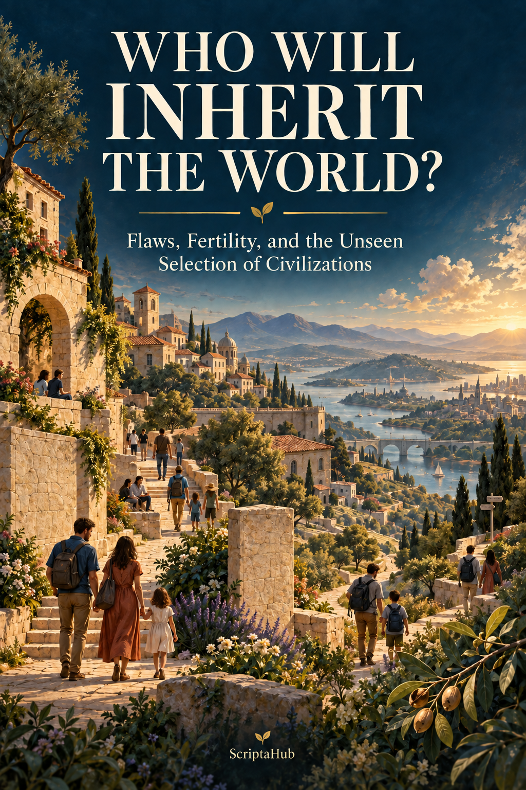

WHO WILL INHERIT
THE WORLD?
Flaws, Fertility, and the Unseen Selection of Civilizations
An Essay in Scientific and Philosophical Synthesis
“Evolution does not reward what we admire.
It preserves what, in a given environment, manages to continue.”
2026 EDITION
CONTENTS
READING NOTE: A BOOK ABOUT A DANGEROUS QUESTION PROLOGUE. THE LAST REASONABLE GENERATION? PART I. THE SELECTOR NO ONE CHOSE 1. EVOLUTION DID NOT STOP AT THE CITY GATES 2. THE FERTILITY FILTER: A MECHANISM WITHOUT INTENTION 2A. THE ARITHMETIC OF SMALL DIFFERENCES 3. THE “FLAW” THAT PAYS DIVIDENDS 4. HERITABILITY WITHOUT DESTINY PART II. THE SHADOWS: PSYCHOPATHY, PARANOIA, EXTREMISM 4A. SEXUAL SELECTION: WHO IS CHOSEN BEFORE THE CHILD EXISTS 5. IF PSYCHOPATHS WERE “FITTER,” WHY ARE WE NOT ALL PSYCHOPATHS? 6. PARANOIA, DISTRUST, AND THE PROBLEM OF THE OVERSENSITIVE DETECTOR 7. DISORDER IS NOT STRATEGY: WHEN PSYCHOPATHOLOGY REDUCES FERTILITY 8. CAN EMPATHY BE A FORM OF SELF-SABOTAGE? PART III. CIVILIZATIONS AS MACHINES OF SELECTION 8A. WISDOM AND THE COST OF DELIBERATION 9. HUMAN DOMESTICATION AND THE INVENTION OF COLD VIOLENCE 10. DID NEOLITHIC MEN DISAPPEAR BECAUSE OF WAR? PERHAPS. OR PERHAPS NOT. 11. EMPIRES, WAR, AND THE ILLUSION OF THE “CONQUEROR GENE” 11A. WAR, RAPE, AND ASYMMETRY OF DESCENT 12. CHINA: WHEN RICE CHANGES MINDS FASTER THAN GENES 13. INDIA: WHEN THE MARRIAGE RULE BECOMES GENETIC STRUCTURE 14. MESOAMERICA: RITUAL VIOLENCE WITHOUT TOTAL REPLACEMENT 15. RELIGION: A CULTURAL MACHINE THAT CAN “PULL” GENES ALONG 16. DO POLITICAL EXTREMES HAVE MORE CHILDREN? A REAL, SMALL, AND UNSTABLE EFFECT 17. THE CITY THAT STERILIZES ITSELF 18. THE ISOLATED COMMUNITY: LABORATORY, REFUGE, OR TRAP? 18A. KINSHIP, THE CHURCH, AND THE “WEIRD” HUMAN PART IV. THE PARADOX OF CIVILIZATION 19. WHEN EDUCATION BECOMES CONTRACEPTION, AND WHEN IT DOES NOT 20. THE CIVILIZATION THAT TAXES ITS OWN VIRTUES | 21. THE SMALL GROUP CAN DEFEAT THE EMPIRE WITHOUT FIRING A SHOT PART V. ARTIFICIAL INTELLIGENCE AND EPISTEMIC DOMESTICATION 21A. BUREAUCRACY AS A SELECTOR 22. ALIGNMENT: TAMING THE MACHINE OR TAMING BELIEF? 23. WHEN THE ASSISTANT BECOMES A CULTURAL PARENT 24. AI CAN MAKE CHILDREN LESS COSTLY—OR MAKE ADULTHOOD ENOUGH 24A. EPISTEMIC PLURALISM AS A SURVIVAL STRATEGY PART VI. SEVEN POSSIBLE FUTURES 25. SCENARIO I—THE GLASS MEGALOPOLIS 26. SCENARIO II—THE NEO-TRIBAL ARCHIPELAGO 27. SCENARIO III—PRONATALIST ENCLAVES 28. SCENARIO IV—THE STATE THAT MAKES FAMILY LIFE EASIER 29. SCENARIO V—THE FORTRESS 30. SCENARIO VI—THE PARTIALLY POST-BIOLOGICAL SOCIETY 31. SCENARIO VII—THE WORLD WHERE REASONABLE PEOPLE REFUSE THE FUTURE PART VII. WHAT WE CAN KNOW AND WHAT WE LIKE TO INVENT 32. THE IMPOSSIBLE TABLE: “THE PERSONALITY OF ANCIENT CIVILIZATIONS” 33. SEVEN ECOLOGIES, SEVEN SELECTORS 34. THE THREE-GENERATION TEST PART VIII. DO WE DESERVE TO SURVIVE? 35. EVOLUTION CANNOT ANSWER THE MORAL QUESTION 36. IS PACIFISM A STRATEGY FOR EXTINCTION? 37. A CIVILIZATION WORTH REPRODUCING 38. WHAT WE SHOULD MEASURE OVER THE NEXT 50 YEARS 39. THE LIES WE CAN TELL OURSELVES EPILOGUE. NOT THE STRONGEST, BUT THOSE WHO CAN CONTINUE APPENDIX 1. THE EVIDENCE MATRIX APPENDIX 2. FALSIFICATION QUESTIONS FOR THE FUTURE SELECTED BIBLIOGRAPHY ON SOURCES AND LIMITS |
READING NOTE: A BOOK ABOUT A DANGEROUS QUESTION
This book begins with an uncomfortable question: what if societies do not merely educate people, but also select them? Not through an announced program, not through laboratories, and not through a eugenic project, but through ordinary differences in fertility, age at first birth, partner choice, migration, status, family norms, housing costs, war, social protection, and prestige. If some ways of life reproduce more successfully than others, and some psychological traits have a hereditary component, institutions can slowly change the composition of populations even when no one intends this.
This proposition is scientifically unremarkable and politically explosive. That is precisely why it must be formulated accurately. Heritability is not destiny. A correlation between a trait and the number of children does not demonstrate genetic selection. Differences between cultures are not automatically genetic differences. A psychiatric disorder is not an ideology, extremism is not a diagnosis, and a personality score is not a moral essence. In many cases, the environment changes behavior much faster than genetic frequencies change.
The book does not propose eugenics or classify human groups as “superior” and “inferior.” On the contrary, a recurring theme will be how easily a modest statistical observation can be turned into a political mythology. The right question is not “what kinds of people should exist?” but “what kinds of social environments make some strategies more reproducible than others, and what unintended consequences might arise?”
We will use three epistemic labels. EVIDENCE identifies relatively robust empirical findings. HYPOTHESIS identifies plausible but still disputed mechanisms. SPECULATION identifies future scenarios or inferences that go beyond the data. This separation does not make the text less provocative; it makes it harder to dismiss.
PROLOGUE. THE LAST REASONABLE GENERATION?
Imagine a society in which the people most concerned about climate, war, overpopulation, the cost of education, genetic risk, political instability, and children's suffering end up having fewer children for precisely these reasons. They are not coerced. On the contrary, they are free, informed, and cautious. They calculate. They postpone. They ask whether bringing a new person into an imperfect world is responsible. They want to provide excellent conditions or none at all. They treat their doubt as a virtue.
In the same society, there are people for whom these dilemmas carry much less weight. They may be traditionalists, religious, optimistic, impulsive, deeply rooted in a group, or simply less inclined to anticipate distant consequences. On average, they have more children. After one generation, the difference is demographic. After several generations, if some relevant traits and predispositions are heritable and the cultural environment remains sufficiently stable, the difference may also have an evolutionary component.
This is the provocative version of the problem: can reflective rationality become a reproductive disadvantage in certain societies? Can empathy for people who do not yet exist reduce the very number of descendants of those who practice it? Can an orientation toward the future end up eliminating future-oriented people from that future?
The question sounds like a Darwinian joke. It is not. Natural selection does not optimize truth, goodness, happiness, or civilization. It does not even optimize individual survival. In its elementary sense, it favors variants that leave more reproducing descendants in a given environment. An organism can be more fragile and yet evolutionarily “fitter” if it reproduces more. A strategy can be morally repugnant and biologically effective. A strategy can be admirable and biologically sterile.
But this is only the first act. The second overturns the story. Contemporary data do not show a triumphant march of psychopathy, stupidity, or fanaticism. Sometimes we find associations in the direction the caricature suggests; at other times, we find precisely the opposite. In Sweden, for example, registers show a positive relationship between cognitive ability and completed fertility among men in certain cohorts: those with the lowest scores had fewer children. In an international study across 17 countries, conscientiousness was positively associated with the number of children, while overall personality effects were small. For psychopathic traits, a representative Croatian sample from 2025 found more children and earlier reproduction, but other samples found null or negative effects. Reality refuses the slogan.
The third act is more interesting than either. In 2026, a genomic analysis of 62 complex diseases reported that, on average, disease-risk variants are associated with shorter longevity but higher fertility; a subset of alleles that increase both disease risk and fertility shows signals consistent with selection favoring them over tens of thousands of years. This does not mean that “disease is good.” It means something subtler: what medicine calls a cost may be part of an evolutionary trade-off. Nature does not read the medical chart.
This is where the book begins. We will not look for the “extremist gene” or the “psychopathic civilization.” We will look for mechanisms: trade-offs, correlations, sexual selection, cultural selection, network effects, endogamy, selective migration, fertility differences, and institutions that change the cost of children. We will ask what the future might look like if large cities, isolated communities, pronatalist religions, algorithmic states, or artificial intelligence created very different reproductive ecologies.
And at the end, we will ask the question that evolution itself cannot ask: if a strategy reproduces more successfully, does that mean it deserves to continue? And if a peaceful, reflective, and cautious society reproduces less, is this a problem that must be “fixed,” or could it be the expression of a legitimate moral choice?
PART I. THE SELECTOR NO ONE CHOSE
1. EVOLUTION DID NOT STOP AT THE CITY GATES
There is a comforting myth that medicine, contraception, and the modern state have suspended natural selection. We have replaced famine with supermarkets, predators with health insurance, infant mortality with vaccines, and the struggle for a mate with dating apps. It seems natural to believe that biological evolution has become irrelevant.
This is false. We have changed selection pressures, not eliminated them. In a population where almost everyone survives to reproductive age, differences in fitness can shift from mortality toward fertility: who has children, how many, at what age, and with whom. If genetic variants indirectly influence these outcomes—through health, temperament, education, risk, preferences, or biological fertility—their frequencies can continue to change.
Behavioral genetics provides the first ingredient. A classic meta-analysis of twin, family, and adoption studies estimated the average heritability of personality at approximately 40% (Vukasović & Bratko, 2015). A much larger genomic analysis, published in Nature in 2026, identified more than a thousand variants associated with Big Five traits and estimated that common genetic variants explain approximately 4.8–9.3% of the measured variation in each trait, with higher estimates after adjustment for instrument reliability. The difference between twin and SNP estimates is not a scandal; they measure different things and remind us that complex traits are polygenic, environmentally dependent, and imperfectly measured.
The second ingredient is variation in reproductive success. Age at first birth and total number of children also have detectable genetic components. A GWAS analysis of more than 250,000 people for age at first birth and more than 340,000 for number of children identified loci associated with reproductive behavior (Barban et al., 2016). This does not mean there is a “gene for having three children.” It means that biology, personality, and social context form part of a shared causal network.
The third ingredient is the environment. This is the easiest to forget. A trait can be heritable without a difference between two populations being genetic. Height is highly heritable, but historical differences in height between populations can result from nutrition. The same principle is even more important for personality. When Chinese farmers were historically assigned quasi-randomly to rice or wheat farms, those on rice farms subsequently displayed more relational thinking, greater loyalty to close others, and less individualism. Measurable cultural differences appeared within a single generation (Talhelm & Dong, 2024). An institutional mechanism can mimic what a hasty observer would call “national character.”
Thus, the relevant formula is not “genes determine society.” It is a circuit: genes -> predispositions -> choices -> institutions -> costs and opportunities -> fertility -> distribution of genes, with reverse arrows throughout. Culture changes what a predisposition means. A risk-taking temperament can produce prestige on a violent frontier, bankruptcy in a bureaucratic economy, or entrepreneurial success in an ecosystem that rewards experimentation. The same hypothetical person could leave different numbers of descendants in three different societies.
This is why society can function as a selector without anyone doing the selecting. A housing policy that makes an extra room impossible before age 35 may have greater evolutionary effects than a thousand speeches about “family values.” A university system that pushes family formation beyond two decades of certification can change fertility in some subgroups. A norm of endogamy can reshape a population genomically. A belief that turns having children into a sacred obligation can have cumulative demographic effects. None of these institutions needs to talk about genes.
EVIDENCE: natural selection continues in contemporary populations, and fertility is a central component of fitness.
HYPOTHESIS: modern institutions can create persistent pressures on psychological traits through fertility differences.
LIMIT: moving from a behavior–fertility correlation to a genetic prediction requires heritability, temporal stability, control for social confounding, and an estimate of actual effects on descendants. Most widely discussed studies do not meet all these conditions.
2. THE FERTILITY FILTER: A MECHANISM WITHOUT INTENTION
Modern selection is often less dramatic than we imagine. It does not require wars. A difference of 0.2 children, sustained long enough and correlated with a transmissible predisposition, can matter. But before turning this observation into an apocalyptic scenario, we need to understand what we are measuring.
Evolutionary fitness is not the same as raw fertility. The number of children is a proxy. Children must survive and, over a longer horizon, reproduce. Some strategies maximize the immediate number of descendants while sacrificing investment per child; others do the reverse. In modern societies, education, health, and family transfers can radically change this relationship. Someone with two children who each go on to have three children may have more grandchildren than someone with four children, three of whom leave no descendants.
Here the first paradox of prudence appears. Wealthy societies reduce infant mortality and allow precise control of fertility. This transforms reproduction from an almost inevitable outcome of sexuality into a project. Projects require justification. And the more capable the mind is of producing justifications, the more reasons it can also produce for postponement. The home is not adequate. The career is not stable. The world is not safe. The relationship is not perfect. The climate is uncertain. A child deserves everything. “Everything” becomes impossible, and the impossible becomes zero children.
Yet demographic studies show that the relationship is not universal. In Britain, a UK Biobank study found that polygenic scores associated with higher education, income, and health predicted lower fertility, but the effects were small and concentrated in certain subgroups; the direction changed in some analyses after controlling for age at first birth (Hugh-Jones & Abdellaoui, 2022). In Sweden, by contrast, male cognitive ability was positively associated with completed fertility, mainly because men with the lowest scores were more likely to remain childless (Kolk & Barclay, 2019). Norway offers similar findings for recent male cohorts: postponement associated with higher cognitive ability does not automatically translate into fewer children by the end of reproductive life.
This means that “intelligent people are disappearing” is a story, not a law. It is more accurate to say that social systems can turn an advantage into a reproductive cost or neutralize that cost. If prolonged education is incompatible with parenting, selection may move in one direction. If economic security, affordable housing, parental leave, and norms compatible with family formation exist, the relationship can reverse.
In 2024, the UN estimated global fertility at approximately 2.25 children per woman, compared with 3.31 in 1990; more than half of countries and territories were below replacement level, and 24 countries whose populations had already peaked had “ultra-low” fertility, below 1.4. Here we are no longer discussing a niche. We are discussing a reorganization of human reproduction on a planetary scale.
This transition can produce a cultural selection effect before it produces a genetic one. Groups whose norms lead to children will make up a larger share of the next generation. Even if all children had exactly the same genetic predispositions, their ideas and institutions would be disproportionately represented. In a world with fertility of 1.2, a stable subculture with fertility of 4 does not need to “persuade” the majority; it only needs to keep enough of its children within the community.
From this follows a rule we will use throughout: cultural strategies are selected first; only sometimes, and much more slowly, are genetic predispositions correlated with them selected. This order saves the analysis from two symmetrical errors: excessive biologization of culture and complete denial of modern biological evolution.
2A. THE ARITHMETIC OF SMALL DIFFERENCES
Selection becomes intuitive only when we turn it into arithmetic. Suppose there are two cultural strategies, A and B, initially equal in number. A families have an average of 1.6 children, while B families have 2.4. If we assumed, unrealistically but instructively, that every child retained the parents' strategy, the B/A ratio would be multiplied by 1.5 in each generation. After five generations, the ratio would be approximately 7.6 to 1. A difference that looks modest in a demographic table ends up radically changing the composition.
But the real world immediately introduces brakes. Not every child reproduces. Not every child remains within the parents' culture. Group fertility sometimes tends to converge as income, education, and urbanization change. Migration can offset decline. A strategy with fewer children can convert more adults. And if the trait of interest is genetic and polygenic, its distribution changes much more slowly than cultural identity.
This allows us to formulate a distinction that public debates miss: cultural selection can operate on the timescale of a generation; genetic change in complex traits is usually much slower. A community can double its cultural share without the population becoming detectably different genetically for a psychological trait.
Moreover, fitness is relative. If the whole society moves from four children to two, a subpopulation moving from three to two and a half can increase its share even while its absolute fertility falls. The evolutionary “winner” need not be prolific in the traditional sense; it only needs to decline more slowly than the others.
This is an important point for societies with ultra-low fertility. In a population where the average approaches one child per woman, a community with two children is no longer demographically ordinary; it is relatively expansive. Words such as “pronatalist” change meaning when the baseline collapses.
The arithmetic becomes subtler still when we include age. Two groups may have the same final number of children, but one has them ten years earlier. A shorter generation time can produce faster growth in descendants over centuries. In historical populations, differences in reproductive age could matter almost as much as the number of children. In modern societies with very late reproduction, this effect deserves attention.
Then male and female variance enters the picture. In strictly monogamous systems, the distribution of the number of children is relatively compressed. In polygynous systems or elites with disproportionate access to female partners, a small number of men can leave very many descendants, amplifying selection on traits associated with status. Y-chromosome bottlenecks and some famous historical paternal lineages become intelligible precisely through this asymmetry.
Finally, selection can act on covariance rather than on a label. A society may favor not “conscientiousness” but the combination of conscientiousness, religious affiliation, and early marriage. Remove religion, and the effect disappears. Provide housing and childcare, and the relationship changes.
This is why sound predictions are not statements such as “trait X will increase.” They are conditional statements: if environment M persists, if X remains correlated with reproductive mechanism R, and if transmission T is sufficiently strong, then the distribution may shift. Without those three “ifs,” we are making mythology.
3. THE “FLAW” THAT PAYS DIVIDENDS
Medicine and morality use the word “flaw” in a local sense. A mutation increases disease risk. A predisposition increases impulsivity. A trait causes suffering in a school or workplace environment. From the individual's perspective, the diagnosis may be very real. From the perspective of selection, however, the question is different: does this variant reduce or increase the number of descendants who go on to reproduce?
Life-history theory is built on trade-offs. Energy invested in growth is not simultaneously available for reproduction; energy invested in reproduction can reduce maintenance of the organism. A strategy that maximizes longevity does not automatically maximize fitness. This is one of the least intuitive differences between medicine and evolution.
In July 2026, a study in Nature Ecology & Evolution analyzed genetic variants associated with 62 diseases, longevity, and fertility. On average, disease-risk alleles were associated with reduced longevity but increased fertility. Moreover, the subset that increased both disease risk and fertility showed signals consistent with selection favoring it over approximately the past 50,000 years (Brigos-Barril et al., 2026). However, the authors found no robust evidence in Mendelian-randomization analyses that genetic predisposition to disease directly causes increased fertility. The correlation may arise from pleiotropy and shared biological pathways.
This nuance is essential. We must not say “disease produces more children.” We can say something more profound: a variant can persist because what we call its cost and what we call its advantage are two effects of the same biological architecture. Evolution has no column of “side effects” separate from its column of “benefits.”
This principle can be cautiously extrapolated to psychology. Extreme impulsivity can destroy lives, but a moderate level of novelty seeking can facilitate exploration. Pathological distrust can isolate, but vigilance can be useful in a dangerous environment. A complete lack of empathy can produce unstable relationships, but the ability to suspend empathy temporarily can be useful to a surgeon, commander, or negotiator. Conscientiousness can increase professional success, but excessive conscientiousness can turn every child into a project impossible to optimize.
The important word is level. Selection does not necessarily move toward extremes. For many traits, fitness may be bell-shaped: too little is bad, too much is bad, and the favorable range depends on the environment. In other cases, rare strategies can have an advantage precisely because they are rare—frequency-dependent selection. A manipulator thrives in a population of trusting people, but a population made up solely of manipulators collapses because no one can exploit anyone else's cooperation anymore.
Here lies a common error in discourse about the “Dark Triad”: the fact that a trait can exploit a cooperative environment does not mean it can build that environment by itself. The social predator needs an ecology of trust. If it becomes too numerous, it changes the niche that made it profitable.
Perhaps the most unsettling thought is not that flaws will prevail. It is that the future might depend on preserving a certain amount of what the present tries to eliminate entirely: risk, suspicion, stubbornness, nonconformity, controlled aggression, even predispositions that become pathological at the extremes. A society that optimizes every deviation down to zero might become vulnerable to shocks that more varied populations absorb.
This is not an argument for suffering or disease. It is an argument against confusing the clinical optimum for an individual with the adaptive optimum for a population in an unpredictable world.
4. HERITABILITY WITHOUT DESTINY
When the public hears that a trait is “40% heritable,” the conversation breaks down almost instantly. Some hear “40% of me is genetic.” Others hear “the trait cannot be changed.” Both are wrong.
Heritability is a statistical property of variation within a particular population, in a particular environment. If everyone received exactly the same education, the proportion of variation attributed to genetic differences could increase even though education remained extremely important for the average level. If environments become very different, the same genetic architecture can produce a different behavioral distribution. Genes do not come with a fixed behavioral label; they operate through development, in organisms that learn.
This clarification becomes critical when we compare cultures. We cannot take a translated Big Five questionnaire, find that two countries have different averages, and infer that genetic selection produced “two national personalities.” We must first know whether the instrument measures the same construct in both languages and contexts. Studies of non-WEIRD populations have revealed serious problems of invariance and validity. Among the Tsimane, an Indigenous population in Bolivia, the standard Big Five structure did not replicate convincingly in an influential study. In an analysis of nearly 95,000 respondents from 23 low- and middle-income countries, standard personality questions had reliability and validity problems, particularly in face-to-face interviews.
This does not mean that people are psychologically identical everywhere. It means that the instrument may distort the very differences we want to understand. “Openness” on an American campus and adaptive curiosity in a subsistence community are not necessarily the same psychological object.
Ancient cultures raise an even greater problem: we do not have questionnaires administered to Han officials, Indus Valley farmers, or Maya nobles. We can study norms, texts, institutions, archaeological remains, genealogies, and ancient DNA. We can compare modern cultural ecologies that retain some structures. But we cannot honestly produce a table saying “neuroticism: ancient China 42, Rome 37.” Any book that does so turns metaphor into fabricated statistics.
Instead, we can ask better questions. Which kinship norms restrict partner choice? Which production systems require intensive cooperation? Which institutions allow certain male lineages to accumulate resources? What type of aggression is punished, and what type is rewarded? Who can have children, and who cannot? How easily can an individual leave the group? These variables leave measurable traces in demography and genetics.
Thus, in the rest of the book, “social selection” will mean a potential process through which institutions alter the distribution of reproductive success. It will not mean that every cultural difference is genetic, or that we can read our ancestors' personalities directly from the genome.
Paradoxically, this methodological discipline allows us to be bolder in speculation. Properly labeled speculation can go very far without pretending to be fact.
PART II. THE SHADOWS: PSYCHOPATHY, PARANOIA, EXTREMISM
4A. SEXUAL SELECTION: WHO IS CHOSEN BEFORE THE CHILD EXISTS
Fertility does not begin at birth. It begins in the mating market. Every society distributes visibility, attractiveness, status, and mating opportunities. These filters can be just as important as the biology of fertility.
In small societies, reputational information is almost complete: people know who cooperates, who breaks promises, and who abandons their children. In metropolises, information is fragmented, and individuals can change networks. Digital platforms reintroduce reputation in a new form: scores, photographs, education, interests, political preferences, and observed behavior. The market becomes simultaneously larger and more filtered.
This matters for “dark” traits. A charismatic narcissist may gain more initial mating opportunities but lose out in long-term relationships. An impulsive psychopath may initiate more relationships, but reduced parental investment and social sanctions may decrease the number of descendants who thrive. A cold but disciplined individual may convert status into reproduction more effectively than a purely antisocial one. The psychological label hides opposing mechanisms.
Sexual selection is also cultural. A body, a temperament, or an occupation acquires erotic value within a historical context. The warrior, imperial official, priest, entrepreneur, or digital creator has occupied a prestigious position in different periods. If prestige translates into marital success and fertility, status institutions become evolutionary filters.
Social monogamy is itself a technology for compressing variance in male reproductive success. In a system where a wealthy man can have dozens of female partners, status produces an extreme distribution of descendants. In a monogamous system, the same economic advantage cannot be converted as easily into a larger number of children. Marital norms thus alter the intensity of selection.
Dating apps could change the ecology again. They expand the potential market but may concentrate attention on a subset of users and encourage continuous searching. Demographically, what matters is not how many “matches” a system produces, but whether it facilitates the transition to relationships in which people want and manage to have children. A platform can maximize local success while unintentionally minimizing family formation.
Assortative mating by education, religion, and politics can have lasting effects. If similar people choose one another, cultural transmission becomes more coherent, and certain genetic combinations correlated with those traits cluster statistically. Geographic isolation is not required. A platform can create a globally distributed reproductive population.
The future could bring a new selector: the AI agent that chooses for you. An assistant that knows your conversation history, preferences, attachment style, and life plans could identify partners with a precision unavailable today. If it optimizes for immediate satisfaction, it will produce one kind of market. If it optimizes for stability over twenty years and a family project, it will produce another.
Thus, the question “which traits will be selected?” may soon be equivalent to “what objective function will we give the matching algorithm?”
5. IF PSYCHOPATHS WERE “FITTER,” WHY ARE WE NOT ALL PSYCHOPATHS?
The seductive hypothesis is simple. A person with reduced empathy exploits others more easily, lies without guilt, abandons partners, seeks sexual opportunities, and takes risks. If these behaviors increase the number of children, selection should favor psychopathy. After enough generations, the world would belong to the descendants of the unscrupulous.
The data refuse this linearity. A 2021 meta-analysis of the prevalence of psychopathy in the general adult population found an average of approximately 4.5%, but with enormous heterogeneity; when the definition was based on the PCL-R, a reference clinical instrument, the estimate fell to approximately 1.2%. A subsequent Spanish community study obtained even lower figures for probable clinical psychopathy. The first message is methodological: “how many psychopaths are there?” depends heavily on what we call psychopathy and how we measure it.
The second message is evolutionary. A representative Croatian study from 2025, N=690, found that psychopathy scores predicted more children and a younger age at first reproduction, while sadism had the opposite relationship (Međedović & Hromatko, 2025). It sounds like our scenario. But a study of Serbian prisoners found negative associations between several dark traits and fertility, while other research reported different combinations: narcissism sometimes positive, psychopathy negative or null, and effects differing by sex.
Why this instability? Because the success of an antisocial strategy depends on ecology. In a small group with transparent reputations, a repeated cheater is identified. In an anonymous metropolis, that person can change networks. In a violent system, fearlessness may help. In an economy requiring long-term cooperation, it may be costly. In a monogamous culture with strict enforcement of parental obligations, opportunistic reproduction is limited. In a polygynous system, status can concentrate male reproduction dramatically.
There is another problem: psychopathy is not simply “rationality without emotions.” Depending on the instrument, it includes combinations of traits such as callousness, manipulation, impulsivity, and antisocial behavior. A cold, deliberate individual capable of delaying gratification can be very different from an impulsive and antisocial one, even though the public may call both “psychopaths.”
The right question therefore becomes subtler: which components of dark psychology does a particular social system reward, and which does it penalize? A corporation may reward boldness and tolerance of conflict but punish repeated breaches of trust. An army may reward controlled proactive aggression but exclude a soldier incapable of discipline. A cult may reward certainty and obedience, but not necessarily individual narcissism.
If a rare trait exploits the majority's cooperation, frequency-dependent selection can maintain an equilibrium. The advantage declines as the strategy becomes common. Society does not inevitably turn into a population of cheaters; it may fluctuate around a proportion at which costs and benefits balance.
The reversal: the real danger might not be “psychopathy genes,” but institutions that selectively reward psychological components useful for exploitation and give them status, resources, and reproductive opportunities. In this case, the problem moves faster than genetics: it is cultural and organizational.
6. PARANOIA, DISTRUST, AND THE PROBLEM OF THE OVERSENSITIVE DETECTOR
Paranoia is a perfect example for understanding why the boundaries between adaptation and pathology cannot be drawn in the abstract. An oversensitive smoke detector produces false alarms. An insufficiently sensitive detector lets the house burn down. The optimal threshold depends on the cost of each type of error.
The same principle can apply to suspicion. In a safe environment, interpreting ambiguous intentions as hostile destroys relationships and produces isolation. In an environment of vendettas, raids, or political betrayal, the cost of excessive trust can be death. A population repeatedly exposed to danger can learn norms of vigilance culturally; over a sufficiently long period, if relevant heritable variation and reproductive differences exist, biological effects may also arise. But the evidence for such specific inferences is much weaker than the intuitive story.
Epidemiology itself warns us. A large American study from 2001–2002 estimated the prevalence of paranoid personality disorder at 4.4%, but a reanalysis using stricter criteria reduced the estimate to 1.9%, while a British study had reported approximately 0.7%. A global meta-analysis of personality disorders found substantially heterogeneous prevalence across methods and countries. Thus, even before asking whether a trait is being selected, we must ask whether we are measuring it comparably.
More importantly, paranoid disorder is not synonymous with vigilance, political skepticism, or distrust of institutions. A dissident in a repressive regime may hold beliefs that seem improbable to an outside observer and nevertheless be right. Many conspiracies have actually existed throughout history. The cognitive problem is not “do you believe in conspiracies or not?” but calibration: how much evidence do you require, how do you update probabilities, do you accept falsification, and do you distinguish possibility from certainty?
Here the connection with the future of AI appears. A recommendation system or a very “safe” assistant can reduce exposure to unvalidated claims. This may be beneficial. But if the filter becomes a central epistemic authority, the cost of false negatives rises: true but unusual ideas can be pushed outside the space of legitimate discussion. Societies need differently calibrated detectors. Some must be skeptical of consensus, others skeptical of exceptions. Knowledge advances through the tension between them.
In this sense, “paranoia” has a legitimate epistemic shadow: the capacity to imagine actors coordinating hidden interests. The problem arises when evidence can no longer recalibrate the detector. A healthy society does not eliminate suspicion; it builds procedures through which suspicion can be tested.
Cultural selection may favor groups with a greater degree of distrust if it improves internal cohesion and defense against outsiders. But that same distrust can reduce large-scale cooperation, trade, and innovation. Again, the advantage depends on the level: what helps the tribe may harm the empire; what protects the sect may hinder the city.
7. DISORDER IS NOT STRATEGY: WHEN PSYCHOPATHOLOGY REDUCES FERTILITY
If we want a truly contrarian book, we must also be contrarian toward our own hypothesis. The claim that “mental flaws reproduce more successfully” is false in its general form.
A Swedish study of approximately 2.3 million people born between 1950 and 1970 analyzed the fecundity of people diagnosed with schizophrenia, autism, bipolar disorder, depression, anorexia nervosa, or substance abuse, and their unaffected siblings. Except for women with depression, diagnosed individuals had significantly fewer children than the general population; the effect was particularly strong for schizophrenia and autism and more pronounced in men (Power et al., 2013). For some disorders, unaffected siblings had slightly increased fertility, suggesting more complicated mechanisms, but not enough to support a universal story of “the advantage of disease.”
This separates two things that popular discourse conflates: a clinical disorder and a subclinical trait. A moderate level of a predisposition may have different effects from its extreme form. A genetic correlation with a reproductive trait does not mean that the manifest disease is adaptive.
For example, some genetic studies report correlations between the polygenic score for ADHD and younger age at first birth or a larger number of children. But this does not demonstrate that an ADHD diagnosis “produces” fertility; pleiotropy and social factors may link the same variants to several behaviors. Similarly, Swedish registers have associated creativity with certain unaffected relatives of people with psychotic or bipolar disorders, but turning this observation into the myth of “mad genius” would be another exaggeration.
Selection can maintain vulnerabilities through new mutations, pleiotropy, advantages among relatives, environment-dependent effects, or because the relevant variant was neutral in the ancestral environment. We do not need a romantic story in which every form of suffering conceals an “evolutionary gift.” Sometimes a cost is simply a cost.
This chapter changes the central question. Not “will the ill inherit the world?” but: what distribution of predispositions does a society produce, and what happens when we try to eliminate all the tails of the distribution? Medicine legitimately seeks to reduce individual suffering. Politics, however, should be cautious when it turns the reduction of suffering into the homogenization of human types.
The future may need neurodiversity without needing untreated illness. This may seem a semantic distinction, but it is a major moral and evolutionary one.
8. CAN EMPATHY BE A FORM OF SELF-SABOTAGE?
Let us state the thesis in its most uncomfortable form. A highly empathetic person considers the child's potential suffering, the climate cost, the risk of war, the burden on the partner, the effect on a career, and the right of a nonexistent being not to be turned into a parental project. A less empathetic person ignores some of these costs and has the child. If the difference recurs systematically, empathy could reduce fitness.
This is a logical hypothesis, not an established finding. There is no robust literature showing that “empathy” as a trait is generally selected against through fertility. Moreover, empathy can improve relationship quality, couple stability, cooperation in childcare, and attractiveness as a partner. In many ecologies, all these things can increase rather than reduce reproductive success.
The same applies to future orientation. Patience and self-control may postpone reproduction but improve resource accumulation and children's survival. In a study of Indian villages, women with more children were not more impulsive; in some analyses, their choices indicated greater patience. Causality could run in the opposite direction—parenting changes preferences—but the example is enough to break the caricature.
The interesting problem is different: what happens when institutions tax virtues? If conscientious people believe that a child must receive a separate home, activities, excellent schools, constant attention, and twenty years of financial planning, the moral standard of parenting can reduce the number of children more effectively than any sterilization. Not because empathy is biologically disadvantageous, but because society has converted empathy into an increasing cost per child.
Here the concept of the “quality trap” emerges. As the expected investment per child rises, quality-oriented parents choose fewer children. In the classical economics of fertility, this is the quantity–quality trade-off. But in a culture of optimization, “quality” has no natural limit. You can always provide one more lesson, a better room, another year of stability before conception. High standards can become sterilizing.
The counterpoint is that societies can change the equation. Care services, suitable housing, flexible career norms, and a fair division of labor can allow cautious people to have the number of children they want. Intelligent demographic policy need not persuade anyone to reproduce an ideology; it can simply reduce the penalty imposed on people who want children but refuse to sacrifice their health, autonomy, or profession entirely.
If empathy becomes self-sabotage, the culprit may be less empathy itself than the social architecture that makes it costly.
PART III. CIVILIZATIONS AS MACHINES OF SELECTION
8A. WISDOM AND THE COST OF DELIBERATION
Wisdom is even harder to measure than empathy. We usually define it through the integration of perspectives, tolerance of uncertainty, recognition of our own limits, attention to distant consequences, and a balance of interests. All these seem like virtues. Yet each carries a cognitive and decision-making cost.
An actor who sees ten consequences has ten reasons to hesitate. An actor who sees only one can act. In environments where speed and commitment are decisive, simplification can beat nuance. In politics, a message of certainty mobilizes people more easily than probabilistic analysis. In war, a commander who can suspend moral deliberation may defeat one paralyzed by alternatives. In reproduction, someone who demands certainty about the future may postpone the decision until biological certainty disappears.
This does not prove that “stupidity is adaptive.” Rather, it suggests a problem concerning the cost of metacognition. A mind capable of simulating its own failure can avoid catastrophes, but it can also avoid actions with positive expected value. A culture that elevates caution into a moral criterion can push the threshold for decision beyond a reasonable level.
Entrepreneurship offers an analogy. If we demand complete proof before experimenting, we no longer experiment. Science works precisely because it accepts the controlled risk of being wrong. Reproductive life is not a scientific experiment, but it faces the same structural problem: complete information is unavailable before an irreversible decision.
Perhaps genuine wisdom should also include the capacity to act under uncertainty, rather than merely contemplate it. If societies teach people to identify risks but not to accept residual risk, they produce a form of intelligence that is barren when it comes to making decisions.
A status effect also operates here. In certain cultural settings, declaring that you do not want children can signal autonomy, cosmopolitanism, or professional priorities; in others, a large family signals success and belonging. People do not calculate material costs alone. They follow prestigious models. By changing prestige, culture can change fertility before any financial policy does.
A society that wishes to preserve reflection must therefore avoid turning it into indecision. It may need a norm of caution that is good enough: do not wait for a perfect world before undertaking a human project that, by definition, will inhabit an imperfect one.
This statement can be abused as pronatalist pressure, so it must remain within the limits of individual freedom. Yet as a cultural analysis, the problem remains: when standards of responsibility become impossible, they no longer produce responsibility; they produce nonparticipation.
9. HUMAN DOMESTICATION AND THE INVENTION OF COLD VIOLENCE
One of the most unsettling hypotheses about human evolution holds that we “domesticated” ourselves. Richard Wrangham and other researchers have argued that Homo sapiens displays signs consistent with selection against reactive aggression—impulsive, angry outbursts that are difficult to control. The proposed mechanism is disputed, and the analogy with animal domestication has serious critics. Yet the distinction it introduces is extraordinarily useful.
Humans can show relatively little reactive aggression while remaining highly capable of proactive aggression: planned, cold, coordinated violence. Wrangham summarizes the paradox this way: compared with chimpanzees, humans tend to be less reactive while retaining a high capacity for proactive aggression. War, execution, administrative purges, and genocide may be less “beastly” precisely in the sense that they are more organized.
This overturns the myth of moral progress. Civilization need not eliminate violence; it can bureaucratize it. Instead of the male who erupts and dominates physically, a group may favor the individual who follows internal norms, cooperates, and participates in the disciplined elimination of an external opponent. Internal docility and external cruelty are not opposites. They can be complementary.
If the self-domestication hypothesis is even partly correct, societies practiced social selection on temperament long before modern states. An uncontrollable aggressor could be exiled or killed by a coalition. Someone capable of navigating reputation and alliances had an advantage. In dense, complex societies, success increasingly depends on impulse control and reading social norms.
Yet there is a possible cost. A group whose members cooperate closely internally can become extremely efficient in competition with other groups. The history of empires need not be explained through a “psychopathic gene.” It is enough for institutions to combine obedience, logistics, ideology, and proactive aggression. A soldier empathetic toward family and comrades can participate in atrocities if the victim's moral category is pushed outside the circle of empathy.
The question “How much empathy does a civilization have?” is therefore almost meaningless without asking “For whom?” The rice–wheat study in China offers a nonviolent example of the same structure: collectivism does not mean universal altruism; it may mean stronger obligations toward close relationships and greater differentiation between friend and stranger.
Civilization can thus be a technology for redirecting emotions. It reduces interpersonal chaos but can concentrate violence within institutions. From the perspective of selection, this matters because institutions decide who receives resources, status, protection, and reproductive opportunities.
10. DID NEOLITHIC MEN DISAPPEAR BECAUSE OF WAR? PERHAPS. OR PERHAPS NOT.
The human genome preserves traces of social organization. One famous example is the post-Neolithic Y-chromosome “bottleneck”: roughly 5,000–7,000 years ago, the diversity of paternal lineages appears to have declined sharply in several populations, without a comparable reduction in maternally transmitted mitochondrial diversity.
One dramatic explanation, modeled by Zeng, Aw, and Feldman in 2018, is violent competition between patrilineal groups. If men live in clans of paternal relatives and those clans fight, the defeat of one group can simultaneously erase many related Y chromosomes. Women can be incorporated through exogamy into the winning groups, preserving maternal diversity. In such a system, culture “travels” with the paternal lineage, and competition between groups also becomes indirect genetic selection.
The temptation to turn this account into a film about violent tribes exterminating peaceful ones is almost irresistible. Yet this is precisely where the science becomes interesting. In 2024, another model published in Nature Communications showed that a segmentary patrilineal structure, with differences in reproductive success between lineages and the genealogical splitting of groups, can produce a comparable bottleneck without requiring violence (Guyon et al., 2024).
This is a lesson for the entire book. The same genetic signal can have several social explanations. War leaves traces, but inheritance, postmarital residence, and variation in clan size can leave similar ones. If we want a story about “psychopathic empires,” the genome may seem to confirm it. If we want a story about kinship institutions, the same genome may confirm that too.
What remains robust is the less cinematic conclusion: social organization can dramatically alter a population's genealogy. It need not change anyone's personality. It only needs to distribute reproduction unevenly between lineages.
In the modern era, the mechanisms differ, but the logic persists. Large cities no longer contain clearly bounded Y-chromosome clans, yet they do contain filters of education, housing markets, mobility, religion, and dating platforms. These do not necessarily erase lineages through violence; they can simply produce very different probabilities of forming a family.
If we want to anticipate future evolution, we must learn to recognize these ordinary filters. Modern selection may look more like a mortgage than a sword.
11. EMPIRES, WAR, AND THE ILLUSION OF THE “CONQUEROR GENE”
Bronze Age migrations profoundly changed Europe's genetic composition. Ancient DNA studies have shown that populations associated with the Pontic-Caspian steppes contributed substantially to later European groups; in certain Corded Ware populations, much of the ancestry can be modeled as deriving from populations close to the Yamnaya. Some regions also underwent heavily male-biased replacements.
The narrative temptation is immediate: more aggressive warriors exterminated more peaceful farmers, and the “genes of aggression” won. Archaeogenetic evidence does not support that conclusion. It can indicate migration, demographic expansion, sex asymmetry, and social change. It cannot read a psychopathy score from a skeleton.
Conquest can amplify the reproduction of certain lineages through political mechanisms. The famous study of a Y-chromosome lineage widespread in Central Asia suggested a connection with Genghis Khan's descendants and with “social selection”: male power produces disproportionate access to reproduction. Although the precise attribution to Genghis Khan remains inferential and debatable, the principle is sound. Status can turn institutions into a genealogical multiplier.
This comes closer to what someone might intuitively call a “psychopathic empire,” but the term remains wrong. Empires can be built by people with very different psychologies, connected through institutions. An efficient accountant may contribute more to expansion than an impulsive warrior. A priest can legitimize the order. An engineer builds roads. A legal system stabilizes property transfers. Reproductive power does not necessarily belong to the most violent individual, but to someone positioned within a structure that multiplies their resources and prestige.
Sometimes violence produces genetic replacement. At other times, conquerors adopt the language and culture of the conquered; sometimes the reverse happens. Sometimes a small elite changes the culture without greatly changing the genome. At other times, peaceful migration changes the genome more than a century of wars.
The best question is therefore not “Did psychopaths win in the past?” but: what combinations of organization, technology, and psychology enabled certain groups to expand and pass on both genes and institutions? The answer ranges from cavalry and epidemics to irrigation, marriages, and accounting.
This perspective allows us to examine the past without turning it into a contemporary political parable.
11A. WAR, RAPE, AND ASYMMETRY OF DESCENT
The history of conquest raises a question that civilized discourse sometimes prefers to phrase vaguely: how much of certain populations' genetic expansion resulted from sexual violence, the seizure of women, or elites' reproductive monopolies? The general answer is that such mechanisms existed, but their magnitude varies enormously, and DNA alone rarely reveals the precise form of coercion.
An asymmetry between paternally and maternally transmitted ancestry can be consistent with male-dominated migration, the integration of local women, polygyny, social elites, or violence. Archaeology, isotopes, graves, and historical documents are needed to distinguish these scenarios. Saying “genocide and rape” whenever we see male-line replacement is as unscientific as excluding these mechanisms because they make us uncomfortable.
Some conquests radically transformed demography. European colonization of the Americas involved war, exploitation, and, above all, epidemics that caused massive mortality among Indigenous populations. The present genetic structure of many Latin American populations shows sex asymmetries between European, Indigenous, and African contributions, reflecting colonial hierarchies. Yet these histories cannot be compressed into a single psychology of the “conqueror.” Institutions governing property, status, and marriage organized reproduction for centuries.
In polygynous societies or empires with extremely wealthy elites, differences in male fitness could be enormous. A ruler did not need a special mutation to leave hundreds of descendants; the institution was enough. This point is crucial because selection can amplify traits correlated with access to the institution, but the institution itself may be transmitted culturally more strongly than the biological predisposition.
War also selects through mortality. If men with certain profiles are more likely to fight and die before reproducing, aggression may be selected against. If military success gives survivors status and partners, it may be favored by selection. The net direction depends on the balance between risk and reward. The mere existence of war therefore does not tell us the direction of selection on aggression.
There is another frequently forgotten mechanism: war can select for cooperation, not just aggression. Effective armies require discipline, trust, synchronization, and sacrifice. Disorganized groups of highly aggressive individuals may lose to groups with controlled individual aggression and superior coordination. This is precisely why the distinction between reactive and proactive aggression is so useful.
If a “psychopathic” empire exists as a metaphor, its psychopathy may belong to the structure rather than the average citizen. An institution can treat people as resources, make cold decisions, and externalize costs even when most participants are empathetic in private life.
This is a more unsettling idea than the theory of the biological conqueror: we do not need a population of psychopaths to produce psychopathic collective behavior. A reward system that separates decisions from consequences and responsibility from action is enough.
12. CHINA: WHEN RICE CHANGES MINDS FASTER THAN GENES
If we want to compare “ancient cultures,” China is almost a methodological trap. Civilizational continuity, intensive agriculture, early bureaucracy, and strong philosophical traditions invite explanations such as “the Chinese were selected for conformity” or “millennia of empire produced a particular temperament.” These claims are seductive and, in this form, almost impossible to demonstrate.
More interestingly, China contains a natural experiment showing how much culture can accomplish without waiting for genetic selection. Rice theory holds that irrigated rice agriculture requires more coordination, labor exchange, and shared water management than wheat cultivation. Initial studies found psychological differences between the traditionally rice-growing south and wheat-growing north: more holistic, relational, and collectivist thinking in rice-growing regions.
The obvious criticism concerned confounding. Perhaps climate, history, migration, or prosperity produced the difference. In 2024, Thomas Talhelm and Xiawei Dong exploited a rare situation: two nearby Chinese state farms with almost identical natural conditions, where people had been assigned quasi-randomly, but topography made one suitable for rice and the other for wheat. Rice farmers showed less implicit individualism, greater loyalty/nepotism toward friends compared with strangers, and more relational thinking. The authors argued that the differences could emerge within a single generation.
This is one of the most important findings for our book, precisely because it undermines a hasty genetic interpretation. If an economic institution can change psychological markers within a generation, we do not need thousands of years of selection to explain many cultural differences.
That does not mean selection disappears from the story. On the contrary, culture can create the environment in which selection operates. If rice farming makes kin cooperation and conformity more valuable, and if those traits affect marriage success or fertility, a component of gene–culture coevolution may emerge over the long term. Evidence for this particular step, however, is much weaker than the cultural evidence.
Bureaucracy adds another dimension. An empire does not select only biologically; it selects who reaches positions of power and which behaviors are imitated. During historical periods, China's imperial examinations created an enormous market for literacy, memory, conformity to the canon, and intellectual competition. The fact that elite status can affect marriage and the number of descendants makes feedback between institutions and reproduction plausible. Yet “plausible” must not become “genetically demonstrated.”
In the future, the platform may be the equivalent of rice. Systems of reputation, recommendation, and work, rather than cereal cultivation, will determine which kinds of psychology are functional. An AI-coordinated city might require less interpersonal negotiation, reducing the advantage of certain social skills. Or, conversely, it might make cooperation with strangers so inexpensive that exclusive group loyalty becomes costly.
China's lesson is not that an ancient civilization produced a “human type.” The lesson is more radical: the technology of production and organization can become psychology, and psychology can subsequently become demography.
13. INDIA: WHEN THE MARRIAGE RULE BECOMES GENETIC STRUCTURE
India offers an almost opposite case. If the rice–wheat experiment shows how quickly culture can change behavior without genes, South Asia's structures of endogamy show how deeply a social rule can enter the genome when it persists for many generations.
A study published in Nature Genetics in 2017 analyzed more than 2,800 people from over 260 South Asian groups and identified 81 groups with strong founder events; some were more extreme than those well known in Finnish or Ashkenazi Jewish populations. The historical context is endogamy: marriage predominantly within the group. The result is not “a caste personality,” but a fragmented genetic structure and an increased risk of certain recessive diseases in specific groups.
This is one of the clearest demonstrations of the general thesis: a social norm governing who can marry whom can genetically reshape populations without anyone explicitly selecting genes. The institution creates reproductive isolation; drift, founder effects, and selection operate within the space that culture defines.
This observation must be separated from any hierarchical interpretation. Endogamy demonstrates neither superiority nor inferiority and permits no simple inferences about intelligence, morality, or personality. It shows only that social boundaries can become real biological boundaries.
For our question about the future, India is more relevant than it seems. Digital networks can create “endogamy without a village.” Dating algorithms filter by education, status, belief, preferences, and geography. Ideological communities can meet globally and marry within a cultural niche even while living in cosmopolitan cities. We do not need legally defined castes to produce strong assortative mating.
Assortative mating matters because it can amplify variance. If people with similar traits pair up, combinations associated with those traits become more concentrated within families, and differences between subgroups can increase even before any strong directional selection occurs. Education already offers an example: educational homogamy is common in many modern societies. When education correlates with age at first birth and fertility, the partner market becomes part of the ecology of selection.
Historical India offers another lesson: institutions can be remarkably stable. When a kinship rule lasts hundreds or thousands of years, small effects accumulate. Our digital future seems fluid, but it could create equally persistent structures: platforms, reputation scores, renewed religious norms, or intentional communities that reproduce themselves.
The paradox is that globalization can produce both mixing and isolation. Someone may work daily with people from five continents yet choose a partner through a cultural filter narrower than their grandparents'. If public life becomes cosmopolitan while reproduction becomes tribal, society's statistics may conceal slow biological fragmentation.
14. MESOAMERICA: RITUAL VIOLENCE WITHOUT TOTAL REPLACEMENT
Mesoamerica is an excellent test of the temptation to interpret violence as genetic success. The iconography of sacrifice, warfare between cities, and bloody rituals seem to invite an image of a civilization in which cruelty was selected and transmitted. Ancient DNA complicates this story.
In 2024, researchers published genomic data from 64 subadult individuals ritually buried at Chichén Itzá, dating roughly between 500 and 900 CE. All the individuals analyzed were male; they included close relatives, among them two pairs of monozygotic twins. The context confirms a highly specific form of ritual selection of victims. Yet genetic comparison with the region's present-day Maya population showed long-term genetic continuity, with notable changes primarily at loci involved in immunity, plausibly under pressure from colonial epidemics.
This finding produces an important reversal: a society can practice spectacular violence without that violence entailing the population's genetic replacement. Ritual and the genome do not tell the same history.
Other ancient DNA studies from the Maya region have identified migrations and transformations associated with the spread of maize agriculture, including substantial ancestral contributions from the south during certain periods. Once again, mobility, subsistence, and reproduction intertwine. Yet we cannot infer a “Maya temperament” or a proportion of “psychopaths” from bone.
For this book's purposes, Mesoamerica forces us to distinguish three levels of selection. The first is cultural selection: the rituals, myths, and institutions that are transmitted. The second is demographic selection: who dies, migrates, or reproduces. The third is genetic selection: changes in the frequencies of inherited variants. These can move together, but they need not do so.
A violent ideology can dominate culturally for centuries and then disappear without having produced a detectable genetic transformation of personality. Conversely, an apparently peaceful marriage norm can leave a much deeper genetic signature than a thousand sacrifices. Visible history and invisible evolution operate on different scales.
This distinction is vital when we consider modern extremism. A movement can be culturally contagious without being reproductive. It may recruit adults rather than produce children. Another may be politically unobtrusive yet highly fertile, with strong retention across generations. If we look only at the news, we will overestimate the first and underestimate the second.
15. RELIGION: A CULTURAL MACHINE THAT CAN “PULL” GENES ALONG
Religion is one of the few domains in which fertility differences can remain large in a society with access to contraception. Yet even here we must avoid confusing religiosity, fundamentalism, and violent extremism.
In 2011, Robert Rowthorn formulated a dual-inheritance model in which a high-fertility religious culture can produce “cultural hitchhiking”: if the predisposition toward religiosity has an inherited component, and individuals with that predisposition more often remain in the fertile group, associated variants can increase in frequency alongside the cultural practice. The model is theoretical, not a demonstration that a single “religion gene” exists. Yet it shows how a cultural rule can alter genetic selection.
Amish communities illustrate the demographic side. A study of Ohio's Amish population found that average fertility remained high, although declining: average parity fell from approximately 5.3 in 1988 to 4.85 in 2015. Religious leaders' families had more children on average than lay families, while occupation and religious subgroup also mattered. In other words, high fertility was not a biological constant; it responded to economics and institutions but remained supported by pronatalism.
Ultra-Orthodox Jewish communities offer another example. American data analyzed in 2023 show high fertility but not “uncontrolled” reproduction: teenage fertility and marriage rates were very low, and family timing was structured. Once again, belief produces a reproductive institution, not simple impulsivity.
This distinction matters morally and scientifically. A community can hold very strict theological beliefs, have high fertility, and exhibit very little violence. Another can display political extremism without high fertility. Research on radicalization does not justify the idea that large families automatically produce extremists; some syntheses have even found small associations in the opposite direction for family size.
The relevant question is retention. A community with six children per family, five of whom leave, does not expand culturally as quickly as one with four children and almost complete retention. An ideology's reproduction is the product of fertility, transmission, and conversion. Genetics adds a layer only if relevant predispositions are heritable and stably correlated with membership.
This creates a paradox for liberal societies. Religious freedom allows groups to maintain different reproductive norms. In the short term, pluralism means coexistence. Over the long term, if differences in fertility and retention persist, the composition of that pluralism changes. Liberalism can unintentionally become an ecology in which high-fertility illiberal groups increase their share.
Yet the outcome is not inevitable. Children are not ideological copies of their parents. Urbanization, education, exogamy, and changing norms can reduce differences. Some communities adapt. Others fragment. Cultures are evolutionary systems, not programs copied without error.
The reversal: secularization is not necessarily the “final victory” of a set of ideas; it may be a phase in which a low-fertility culture dominates institutions while high-fertility niches grow demographically. The question is how stable those niches remain.
16. DO POLITICAL EXTREMES HAVE MORE CHILDREN? A REAL, SMALL, AND UNSTABLE EFFECT
There is a very convenient story for the political center: moderates are rational and cautious, extremists are confident and prolific, and democracy is therefore becoming biologically polarized. A 2018 study found exactly the picture needed for headlines: in the World Values Survey, with more than 150,000 people, the relationship between left–right political position and number of children was broadly U-shaped, with more children at the extremes, more markedly on the right.
Then comes the part the headline loses. When countries were analyzed separately, the relationship was nonsignificant in most, and its direction varied. In European and American data, the advantage was mainly on the right. Across the large pooled sample, political orientation explained a very small fraction of fertility variation. The authors themselves concluded that no definitive evolutionary conclusions could be drawn because the association changes across countries and over time (Fieder & Huber, 2018).
This is a model case of epistemic discipline. Yes, there is a signal worth taking seriously. No, it does not justify the claim that “extremists will inherit the Earth.”
First, the labels left and right do not mean the same thing in Tanzania, Sweden, Romania, and the United States. Political orientation is also strongly shaped by culture. Even if predispositions such as openness, threat sensitivity, or preference for order have heritable components, there is no simple genetic line from an ideological score to political descendants.
Nevertheless, the phenomenon may become more important if polarization turns into reproductive assortment. If people increasingly choose partners by political identity, raise their children in segregated networks, and display stable fertility differences, politics can become a population boundary. Separate states are unnecessary; separate schools, neighborhoods, churches, platforms, and circles of friends are enough.
AI can accelerate this process. Personalized recommendations can make ideological compatibility easier to detect. A dating system can optimize for “shared values” and unintentionally increase political homogamy. A personal assistant can mediate information so that two groups live on the same street but inhabit almost entirely separate epistemic worlds.
Extremism becomes evolutionarily relevant not because it is “madness,” but when it is linked to structures of reproduction and retention. An ideology that demands sacrifice but discourages family life may disappear demographically. One that is doctrinally moderate but has strong family institutions may grow.
Biology does not read manifestos. It counts genealogies.
17. THE CITY THAT STERILIZES ITSELF
Large cities are engines of innovation and, in many countries, places of lower fertility. In Scandinavia, register-based studies have found significantly higher fertility in suburbs than in urban centers, a difference that persists after controlling for certain socioeconomic characteristics. In Europe, education, income, occupation, and family norms explain some urban–rural differences; selective migration complicates everything, because people who want children may move just before having them.
This simple geography can produce social selection. Cities attract people who are more educated, more mobile, often more open to experience, and more career-oriented. If these same people postpone family formation longer or remain childless, the urban center can function as a pump: it draws certain profiles out of the regions, uses them economically, and returns fewer of them to the next generation.
This is a modern version of a celibate institution, but without the vow. Nobody says, “Do not have children.” The system says: a two-room apartment costs this much; the job requires relocation; promotion comes during the fertile years; the commute is long; childcare has a waiting list; a compatible partner lives two hours away; time is fragmented. Formal freedom remains intact. The demographic outcome can be deeply constraining.
In a future megacity, the effect could intensify. Small homes, hypercompetitive careers, prolonged education, and digital socializing can push family formation ever later. Reproductive technologies can recover some biological fertility lost through postponement, but they cannot produce desire, time, or stable partnerships.
Yet cities can be redesigned. If family housing is abundant, childcare is integrated into the neighborhood, flexible work is real, and infrastructure reduces logistical costs, urban fertility is not genetically doomed. The city is not a natural selection pressure; it is a package of policies and prices.
Comparisons between the megacity and the isolated village should not be moral judgments. A village may have high fertility but limited opportunities and pressure to conform. A city may have low fertility but freedom and diversity. The design question is whether we can preserve the city's advantages without making family life a luxury good.
If not, the future may belong less to city dwellers than to the children of communities that have found a less costly way to reproduce social life.
18. THE ISOLATED COMMUNITY: LABORATORY, REFUGE, OR TRAP?
Isolation can preserve languages, rituals, and rare forms of cooperation. It can sustain high fertility through shared norms and mutual help. It can reduce anonymity and make reputation effective. From an evolutionary perspective, however, isolation does two powerful things: it limits gene flow and increases the force of drift and founder effects.
There is no need to idealize or demonize. Some isolated communities exhibit remarkable social health and low levels of violence. Others may block exit, repress deviation, and perpetuate recessive genetic risks. The same architecture—endogamy, dense kinship networks, and strong norms—can produce both internal cooperation and individual costs.
For personality traits, data from small-scale societies are fascinating precisely because they do not fit Western instruments perfectly. Among the Tsimane, for example, the Big Five structure replicated poorly, and researchers proposed factors more closely related to prosociality and industriousness. The interpretation remains disputed, but the lesson is secure: we cannot assume that taxonomies developed in WEIRD societies constitute personality's universal alphabet.
In a small community, selection may favor different traits than in a metropolis. Reputation matters more; repeated cheating is hard to conceal; roles are less specialized; relatives are more present; conflict is costly because changing networks is difficult. In a city, anonymity allows a social restart but demands skills for interacting with strangers and impersonal institutions.
The future could combine both: digital tribes with urban geography. People can be physically mixed and socially isolated. Communities can have their own schools, media, dating, financing, and norms without territorial borders. In this case, cultural group selection may become stronger precisely because technology reduces coordination costs.
This leads us toward the most polarizing scenario: the reproductive community, rather than the nation-state, could become the relevant unit of the twenty-first century. Some will be religious; others environmentalist, technophile, traditionalist, postnational, or built around a philosophy. Differences in fertility and retention between them may matter more than differences between countries.
18A. KINSHIP, THE CHURCH, AND THE “WEIRD” HUMAN
An influential hypothesis about Western psychology links kinship institutions to the emergence of modern individualism. Joseph Henrich and colleagues have argued that, in Europe, the Western Church's historical policies against marriage between relatives and certain forms of extended family gradually weakened intensive kinship networks. Within this ecology, voluntary relationships with strangers, impersonal institutions, individualism, and certain forms of analytical thinking would have become more important. The study in Science in 2019 reported associations between historical exposure to the Western Church, kinship structure, and several psychological measures.
The hypothesis is fascinating and disputed. Critics have raised issues of causality, historical confounding, and variable selection. It should not be treated as the definitive explanation of the “Western mind.” Yet even in its cautious form, it puts the book's central mechanism on the table: marriage rules -> kinship structure -> institutions -> cultural psychology.
This chain can also affect reproduction. In intensive kinship networks, childcare costs can be distributed across the extended family. In individualistic systems, the nuclear couple carries more of the burden. On the other hand, impersonal institutions can provide nurseries, schools, and insurance that replace the extended family. There is no universal winner.
This shows why “old” and “new” societies cannot be placed along a simple axis of cultural evolution. A clan structure is not a primitive stage of the bureaucratic state; it is a different solution to problems of trust, support, and conflict. The modern state can eliminate some of the clan's advantages, but if it fails to replace its caregiving function, it can produce loneliness and low fertility.
WEIRD societies—Western, educated, industrialized, rich, and democratic—are anthropologically unusual in their individualism, relational mobility, and trust in impersonal institutions. Much of twentieth-century experimental psychology treated this particular case as the universal human. Cross-cultural research has gradually corrected the error.
For the future, the question is whether AI and platforms will strengthen the WEIRD model or recreate the clan. A personal assistant can reduce dependence on family, making the individual even more autonomous. Yet digital networks can form communities with their own norms, matchmaking, and mutual aid, recreating functional kinship without blood ties.
If these latter communities have higher fertility, the future may be post-WEIRD not through a return to the past, but through the emergence of digitally assisted forms of new kinship.
PART IV. THE PARADOX OF CIVILIZATION
19. WHEN EDUCATION BECOMES CONTRACEPTION, AND WHEN IT DOES NOT
One of the most persistent modern fears is “dysgenic selection”: if education and intelligence are associated with fewer children, society might slowly lose cognitive capacities. The history of this idea is burdened by eugenics, poor measurement, and politics. Yet the fact that an idea has been abused does not mean the statistical question must be prohibited.
The data offer a much less dramatic answer. In some populations and cohorts, education, cognitive scores, and fertility show negative correlations. UK Biobank reveals signals of modest negative selection on polygenic scores associated with education and certain forms of human capital. Yet these depend on socioeconomic structure and do not amount to an inevitable decline in intelligence.
In Sweden, registers for men born between 1951 and 1967 show the opposite relationship: higher cognitive ability was associated with higher fertility, and men with the lowest scores had the largest deficit, mainly through not having a first child. Comparisons between brothers strengthened the positive relationship. In Norway, an analysis of 32 male cohorts likewise showed that the relationship between ability and completed fertility cannot be reduced to the slogan “the most intelligent have fewer children.”
Why? Because education and ability are not the same variable, and societies are not the same. Education can postpone family formation through timing. Ability can increase income and the likelihood of a stable partner. Family policies can offset opportunity costs. Gender norms can place the burden of postponement mainly on women. The relationship can change between cohorts even within the same country.
If we want to design the society of the future, the useful conclusion concerns institutions: there is no inevitable biological reason why people with high education or cognitive ability must have low fertility. It is a property of the social ecology. We change it through the timing of education, career flexibility, housing costs, access to care, and the distribution of domestic work.
This is both good news and bad. The good news: we are not prisoners of a dysgenic law. The bad news: if society produces an unfavorable gradient, we cannot blame “nature.” We built it.
20. THE CIVILIZATION THAT TAXES ITS OWN VIRTUES
A society can declare that it values education, responsibility, empathy, environmental care, gender equality, and long-term planning. Yet if its institutions make these values incompatible with family life, the declaration is cheap.
Imagine two people. The first spends twenty years accumulating education, moves repeatedly for opportunities, wants an equal relationship, refuses to have children without stability, and wants to give them real time. The second joins a community early, with clear roles, family-supported housing, pronatalist norms, and caregiving networks. This person need not be wealthier or healthier. Their ecology transforms the child from an individual project into a distributed function of the group.
If the first has one child at 38 and the second has four between 23 and 32, society has indirectly selected a way of life. Not necessarily genes. Not yet. First, it selected the institution that reproduces the institution.
Here a possible modern lie emerges: that reproductive choice is purely individual. Formally, it is. Materially, it is strongly structured. Prices, norms, leave policies, careers, infrastructure, and the availability of partners define the actual space of choice.
Another possible lie is that tolerance and pluralism are automatically self-sustaining. They can allow very different communities to flourish. If some of those communities have much higher fertility and retention, their share grows. For pluralism to reproduce itself, it must be not only intellectually convincing but also compatible with family life.
This does not justify coercive policies. Quite the opposite. A policy that tries to “correct” demography by controlling reproduction would sacrifice the very values it claims to save. The more intelligent question is how to narrow the gap between desired and realized fertility without prescribing who should have children.
One possible principle is the reproductive neutrality of virtue: society should not make empathy, education, research, care for others, or financial prudence incompatible with having a family. This does not mean incentives for “the right people.” It means removing structural penalties that make certain lives reproductively prohibitive.
In a world of declining total fertility, this objective may matter more than moral campaigns about birth rates.
21. THE SMALL GROUP CAN DEFEAT THE EMPIRE WITHOUT FIRING A SHOT
History has accustomed us to associating expansion with conquest. Yet under conditions of low fertility, arithmetic can replace the sword.
Consider a purely illustrative example. Two subpopulations start at the same size. The first produces an average of 1.3 children per woman, the second 3.5. We ignore migration and assume high cultural retention. After a few generations, the difference in their shares can become enormous even if nobody has converted or attacked anyone. No conspiracy is needed. It is exponential compounding.
In reality, the model is much more complicated. Fertility often converges as groups urbanize. Children leave. Mixed marriages increase. Norms change. The state transfers resources between families. Yet these very variables become evolutionary levers.
A community that wants to reproduce over the long term needs at least four things: enough children, survival, retention, and access to partners. It can achieve retention through love and meaning or through fear and control. From outside, both communities may appear “stable”; morally, they are radically different.
This distinction will become central in the future. If groups with coercive norms have higher fertility, a liberal society should not imitate coercion to “compete.” It can build an alternative: voluntary caregiving networks, family housing, community institutions, status for parenting, and compatibility between autonomy and children.
The real competition is not between the genes of reasonable people and the genes of extremists. It is between social systems capable or incapable of making their values livable for families.
PART V. ARTIFICIAL INTELLIGENCE AND EPISTEMIC DOMESTICATION
21A. BUREAUCRACY AS A SELECTOR
Bureaucracy seems the opposite of natural selection: forms, rules, diplomas, licenses, procedures. Yet it may be one of the most powerful modern machines of social selection.
A bureaucratic system rewards certain profiles: tolerance of rules, the capacity to defer, literacy, navigation of administrative abstractions, punctuality, and self-control. Someone highly effective in an environment of kinship and oral negotiation may be disadvantaged in a document-based state; someone else thrives. If access to status, housing, and family life depends on bureaucratic success, the administrative filter indirectly enters demography.
Yet bureaucracy can also have a sterilizing effect on those who master it best. Ever-longer certification pushes economic independence to later ages. Professional hierarchies place the years of competition directly over the years of peak biological fertility. A performance culture turns every interruption for children into a career cost. The system demands conscientiousness and then taxes it reproductively.
This is not a contradiction for the institution. Bureaucracy optimizes short-term outcomes—competence, continuity, predictability—not the reproduction of the human type that sustains it. It can consume social and human capital without regenerating it. Medieval universities staffed by celibate clergy explicitly depended on families outside the institution to recruit the next generation. Some modern professions may function similarly, except that celibacy is statistical rather than normative.
Migration masks this for a while. A city or organization can continually attract young people from other regions and appear demographically vibrant even if its existing residents have few children. Ecologically, it is a sink habitat: it persists by importing individuals rather than through internal reproduction.
Globally, the same mechanism can operate between countries. Low-fertility societies attract migrants from higher-fertility societies. Migration can sustain population and diversity, but it does not eliminate the question of which reproductive norms will converge or persist in the second and third generations.
AI promises to reduce bureaucracy. If agents can navigate documents, taxes, benefits, schools, and medical services, the administrative cost of family life may fall. Yet a more opaque algorithmic bureaucracy may emerge: automated scores, eligibility checks, profiling, and rules that are impossible to challenge.
The bureaucratic selector of the future may be invisible even to those being selected. It will not say, “I prefer people with trait X.” It will merely require everyone to pass through the same pipeline. And that pipeline will be easier for some than for others.
Institutional audits should therefore include an unusual question: which kinds of life does this system make easy to continue across generations, and which does it consume without regenerating?
22. ALIGNMENT: TAMING THE MACHINE OR TAMING BELIEF?
In the technical sense, AI alignment seeks to make systems pursue relevant intentions and values, avoid dangerous behavior, and remain controllable. The problem is real: a capable but poorly aligned agent can optimize the wrong objective with serious consequences. There is nothing inherently sinister about preventing a powerful machine from acting arbitrarily.
Yet AI assistants are not just agents. They are becoming mediators of reality. They summarize news, explain science, filter sources, recommend actions, formulate arguments, and decide which answers are too risky, too speculative, or too offensive. In this role, behavioral alignment can become epistemic alignment: an implicit distribution of ideas that the system makes easy or difficult to formulate.
This is not an accusation that AI “censors the truth.” It is a structural problem. Every filter has false positives and false negatives. If you optimize strongly against misinformation, you may penalize hypotheses that are correct but premature. If you optimize for maximum pluralism, you may amplify pseudoscience. There is no neutral threshold.
The connection to selection emerges when people outsource judgment. If educated, cautious people rely more on aligned assistants, while groups with closed epistemologies reject these systems and retain their own institutions, a bifurcation may occur. The former become more homogeneous in discourse but perhaps less communal; the latter remain epistemically separate but demographically cohesive.
The polarizing scenario is this: AI civilizes discourse precisely within low-fertility groups, while groups that reject filtering retain high fertility. After a few generations, the “reasonable” culture becomes more dependent on machines and less biologically reproductive, while anti-alignment cultures grow demographically. The Earth is inherited not by AI, but by people who refused epistemic domestication.
Is this a prediction? No. It is a speculation constructed to expose a hidden variable: the effect of epistemic technologies on reproductive institutions.
The opposite scenario also exists. AI can reduce parenting costs, provide tutoring, organize family logistics, detect health problems, enable flexible work, and support couples. Technology adopted by educated populations could then increase their fertility and neutralize current gradients. Alignment could form part of the infrastructure that makes a pluralistic, safe society easy enough to inhabit that it reproduces itself.
The right question is not “Is alignment good or bad?” It is: which human behaviors become less costly, more prestigious, and more reproducible in a world mediated by AI?
23. WHEN THE ASSISTANT BECOMES A CULTURAL PARENT
Children of the future will probably receive part of their education from AI systems. Not just information, but feedback, moral explanations, conversational models, and content selection. For the first time, a global infrastructure could participate directly in cultural transmission within billions of families.
This changes the relationship between fertility and retention. In the past, a group with many children could transmit its culture effectively through family, school, and community. If AI tutors use global curricula and norms, vertical parent-to-child transmission may weaken. A pronatalist community could produce many children who rapidly adopt cosmopolitan values. Or it may respond by banning external tutors and building its own models.
We will probably see competition between models of socialization. Some AI systems will be optimized for critical thinking and pluralism, others for tradition, religion, or identity. Some communities will use isolated local models. In such a world, alignment is no longer merely a technical property; it is an institution comparable to schools, churches, and the press.
Uniformity is not the only risk. Hyperfragmentation may emerge: each group trains its children within an epistemic reality of its own, perfectly assisted by AI. The technology that could create a common language becomes the most effective mechanism of cultural endogamy in history.
Yet there is also an extraordinary opportunity. A well-designed AI can teach a child to distinguish certainty from probability, belief from evidence, and disagreement from enmity. It can present an opponent's arguments in their strongest form. It can preserve pluralism without treating every claim as equivalent.
If we want a reasonable society to reproduce itself, perhaps the most important “alignment” is not AI's obedience to a list of values, but the system's capacity to cultivate people who can revise their values without destroying their communities.
This is a different form of domestication: not reducing variation in beliefs, but reducing the cost of conflict between beliefs.
24. AI CAN MAKE CHILDREN LESS COSTLY—OR MAKE ADULTHOOD ENOUGH
Modern fertility is constrained not only by money, but by time, coordination, and meaning. AI can intervene in all three.
In the optimistic scenario, assistants automate bureaucracy, plan meals, schedule appointments, provide tutoring, monitor safety, translate, organize transport, and enable flexible work. Some of parenting's invisible cognitive labor becomes less costly. If that cost is one reason educated, conscientious people postpone children, AI can directly alter the fertility gradient.
In the pessimistic scenario, AI makes life without a family more satisfying and convenient. Artificial companions offer conversation and predictable affection. Hyperpersonalized entertainment reduces the boredom that once pushed people toward community. Work and status become sufficient foundations for identity. Human relationships seem costly, and children radically unpredictable. Technology reduces the very pressures that once produced couples and families.
Both scenarios are plausible and can coexist for different groups. AI could increase fertility among those who already want children while reducing motivation among the ambivalent. In that case, technology amplifies differences between subcultures.
One subtle consequence is that AI can alter selection on traits through compensation. If memory, planning, or certain social skills are outsourced, their reproductive value falls. If AI protects against the consequences of impulsivity, its cost may decline. If reputation systems detect manipulation, the advantage of exploitative traits may diminish.
Technology does not merely select ideas. It changes the landscape in which traits carry costs and benefits.
In this sense, humanity's genetic future may depend more on interface design than on debates about genetics.
24A. EPISTEMIC PLURALISM AS A SURVIVAL STRATEGY
A biological population withstands change better when it preserves variation. A culture may need something similar: competing hypotheses, redundant institutions, and people willing to challenge consensus. Yet the analogy must be used carefully. Not every false belief is “useful diversity,” just as not every mutation is adaptive.
The problem is that we do not know in real time which deviation will become useful. A community that eliminates all improbable ideas can reduce noise while also losing discoveries. A community that validates every deviation drowns in noise. The scientific solution is not unfiltered freedom, but freedom to hypothesize combined with rigorous testing.
This principle should carry over into AI alignment. A system can distinguish between helping to explore a hypothesis and asserting that it is true. It can allow unorthodox arguments while requiring sources and possible falsifiers. It can mark uncertainty rather than prohibit the question.
If we fail to make this distinction, two ecosystems emerge. The official one has access to powerful tools but a narrow window of discourse. The marginal one permits anything but has weak verification. Highly distrustful people migrate to the latter, where errors can reinforce themselves. Instead of reducing extremism, we concentrate it within epistemically isolated networks.
From the perspective of cultural selection, a belief need not be true to remain stable. It needs to produce retention, identity, and transmission. Sometimes beliefs that are difficult to verify can be more resilient precisely because their falsification is reinterpreted as a loyalty test. If mainstream AI avoids engaging with such beliefs entirely, it may lose the opportunity to build bridges toward verification.
Alignment that seeks to protect an open society should therefore avoid two forms of “domestication”: homogenizing ideas and infantilizing the user. Someone who stops exercising judgment because an assistant decides what is acceptable may become safer locally and more fragile globally.
There is a parallel here with the immune system. Complete protection from exposure does not necessarily produce robustness, but uncontrolled exposure is dangerous. We need measured, contestable challenges with mechanisms for correction.
In the future, a reasonable society may survive not because everyone believes the same things, but because its institutions can turn disagreement into information. This would be the epistemic form of adaptive diversity.
PART VI. SEVEN POSSIBLE FUTURES
25. SCENARIO I—THE GLASS MEGALOPOLIS
The year is 2100. Most of the population lives in enormous urban corridors. Homes are efficient, compact, and expensive. Education is lengthy, and careers are flexible but competitive. AI eliminates much manual and administrative work, yet status becomes even more dependent on creativity, networks, and visibility.
Fertility remains very low at the center and higher on the periphery. People who want families move to areas with space and infrastructure for children. The megalopolis functions as a migration selector: it attracts young people with openness, ambition, and tolerance of anonymity, after which some either move back when they have children or remain childless.
The dominant evolutionary pressure is not “intelligence versus stupidity,” but compatibility with forming stable relationships in an environment of unlimited options. The ability to choose and stop searching becomes rare and valuable. People most committed to optimization can remain trapped in an endless market of alternatives.
AI can solve or worsen the problem. A system that optimizes genuine compatibility and supports commitment can increase family formation. A system that optimizes time spent in the app keeps the search going.
In this future, selection is a product feature. The “next” button has demographic consequences.
26. SCENARIO II—THE NEO-TRIBAL ARCHIPELAGO
States remain, but culture fragments into intentional communities. People choose networks with their own schools, AI models, rituals, insurance, and marriage markets. Some are religious; others environmentalist, technophile, traditionalist, or experimental. Geography matters less than belonging.
Fertility varies enormously. Communities that make parenting a collective activity and give parents status grow. Communities centered on individual careers and mobility have low fertility. Within a few generations, cultural shares change.
The major risk is reduced epistemic exogamy: people no longer seriously encounter arguments from outside their community. With local AI systems, every tribe has a library that confirms its views. Physical conflict may be rare, but distrust between groups increases.
The advantage is institutional experimentation. Different communities test forms of family life, education, and governance. Dysfunctional ones lose members; attractive ones are imitated. Culture becomes more evolutionary but also less universalist.
The paradox: society can become simultaneously more tolerant in law and more tribal in social life.
27. SCENARIO III—PRONATALIST ENCLAVES
Overall fertility falls below 1.5, but a few communities maintain 4–6 children and high retention. They do not control the state and do not need to. Schools, shared property, support networks, and religious norms make large families sustainable.
At first, they are treated as sociological curiosities. After two or three generations, arithmetic becomes politics. These communities begin to represent a substantial fraction of younger cohorts, even if their share of the elderly population remains small.
The liberal state faces a dilemma. It can protect the group's freedom, including norms the majority considers restrictive, but it must also protect children's right to leave. If it attempts aggressive assimilation, it reinforces a siege identity. If it ignores abuses in the name of pluralism, it abandons individuals.
The outcome depends on permeability. Enclaves that combine high fertility with voluntary exit, sufficient education, and peaceful external relationships can become demographic stabilizers. Those that require severe information control to retain members can generate conflict.
Cultural selection does not tell us which variant is morally better. It simply forces us to take seriously the possibility that one may reproduce more efficiently.
28. SCENARIO IV—THE STATE THAT MAKES FAMILY LIFE EASIER
In this future, governments abandon pronatalist propaganda and treat fertility as an infrastructure problem. They do not pay “the right people” to have children or penalize childlessness. Instead, they build family housing, reduce incompatibility between education and parenting, offer flexible care, and use AI to eliminate administrative burdens.
The effect is not necessarily a demographic explosion. It is a narrowing of the gap between the desired and realized number of children. Cautious people no longer have to choose between high parenting standards and the child's existence.
If this architecture works, reproductive pressures between groups diminish. Religion or impulsivity are no longer the only “technologies” that make family life possible. Liberalism learns to reproduce itself materially, not just intellectually.
This is the scenario in which the book's alarmist thesis proves useful precisely because it does not come true. Society notices the selector and changes its environment without selecting people.
29. SCENARIO V—THE FORTRESS
A series of shocks—wars, pandemics, regional climate collapse, cyberattacks—pushes societies toward “tightness”: stricter norms, less tolerance of deviation, central coordination, and prestige for discipline. In threatened environments, such traits can be functional.
Fertility rises in groups that turn reproduction into a duty of national or religious continuity. Universalist empathy loses ground to group loyalty. AI is aligned not with pluralism, but with collective resilience.
The paradox is that this society may be highly rational locally. If the threat is real, obedience and sacrifice can save the group. What seems like “extremism” in a safe period may become an adaptive strategy during conflict.
Yet the fortress has an evolutionary problem: once the threat disappears, institutions built for crisis may continue producing crises to justify themselves. The system selects leaders and beliefs that sustain the perception of danger.
The future involves not only the selection of individuals. It also involves the selection of institutions that reproduce their reasons for existing.
30. SCENARIO VI—THE PARTIALLY POST-BIOLOGICAL SOCIETY
Assisted reproduction becomes safer, less expensive, and more common. People can preserve fertility longer through medical technologies; embryo selection for monogenic diseases is common where legal; some jurisdictions may see widespread use of polygenic scores, although prediction for complex traits remains limited and population-dependent.
In this world, selection is no longer merely natural. It becomes partly deliberate. This is precisely where the history of eugenics must serve as the strongest warning. Polygenic prediction does not provide a list of “better children”; its effects are probabilistic, pleiotropic, and value-laden. Selecting for one trait may alter others through unknown genetic correlations.
Moreover, a society may try to eliminate predispositions it considers flaws and later discover that it has reduced the variation that supported adaptation. The problem is not mystical. It is the same as optimizing a complex system: if you aggressively optimize an incomplete metric, you lose robustness.
One cautious principle would distinguish reducing severe diseases with well-understood mechanisms from optimizing a population's behavior. The first can reduce suffering without presupposing a moral hierarchy of persons. The second opens a box of epistemic and political problems for which we have no legitimate objective function.
In this world, the old selection through fertility does not disappear; selection through access to technology and reproductive choices is layered over it. Inequality becomes biologically relevant in a new sense.
31. SCENARIO VII—THE WORLD WHERE REASONABLE PEOPLE REFUSE THE FUTURE
This is the darkest scenario, but not because of violence. A highly educated culture comes to regard reproduction as morally suspect: for climatic, antinatalist, or economic reasons, or from fear of imposing existence on someone without consent. There is no coercion. People voluntarily choose few or no children.
Meanwhile, groups with a strongly pronatalist metaphysics continue reproducing. After a few generations, the antinatalist culture has shrunk through its own principle. It was not defeated in a debate. It remained faithful to its own conclusion.
Is this a contradiction? Not necessarily. If someone's moral aim is to reduce suffering and they consider future existence an unjustified risk, the disappearance of their own tradition may be acceptable. Natural selection cannot “prove” this ethic wrong. Survival is not a logical obligation.
Yet there is a tension. A movement that wants a better world for future generations while drastically reducing its own descendants may cede the future to groups that do not share its values. If the objective is to transform the future, reproduction and cultural transmission are part of the mechanism, not a private detail.
This may be the book's most uncomfortable question: can an ethic of care become incoherent if it removes the bearers of care from the future?
The answer depends on what the ethic seeks. If it seeks to reduce total suffering even at the cost of disappearance, it may be coherent. If it seeks a more empathetic human civilization five centuries from now, it must also include the conditions through which empathy is transmitted.
Comparative matrix of the seven futures
Scenario | Dominant ecology | Likely selector |
|---|---|---|
The glass megalopolis | anonymity, careers, expensive housing | postponed family formation; filtering through partnership |
The neo-tribal archipelago | dense networks and closed communities | cultural assortment; strong internal transmission |
Pronatalist enclaves | family norms and shared meaning | persistent fertility differences between subcultures |
The state that makes family life easier | housing, care, modular careers | reduced reproductive penalty for education |
The fortress | threat, discipline, conflict | advantage for cohesion and controlled aggression |
Partially post-biological | assisted reproduction and AI agents | partial separation of reproduction from its former costs |
Reasonable people refuse the future | moral caution and pessimism | demographic self-selection of reflective groups |
PART VII. WHAT WE CAN KNOW AND WHAT WE LIKE TO INVENT
32. THE IMPOSSIBLE TABLE: “THE PERSONALITY OF ANCIENT CIVILIZATIONS”
At the beginning of our research, we might be tempted to construct a seductive table: ancient China—high conscientiousness; India—conformity; Maya—aggression; hunter-gatherers—openness; modern Europe—individualism. It would look exactly like a page that circulates well online and would almost certainly contain more fiction than science.
We have no psychometric measurements for ancient populations. Surviving texts were produced by elites and are often normative: they tell us what a good person was supposed to be, not the statistical distribution of temperaments. Archaeology can reveal war, sacrifice, trade, or settlement, but it cannot directly turn an object into an agreeableness score. Ancient DNA can identify kinship, migration, and sometimes variants associated with biological phenotypes, but polygenic prediction of personality across populations and millennia is too uncertain for such portraits.
Even modern comparisons have limits. A very large international study may find average differences between countries, but these tend to be smaller than variation between individuals within the same country. Moreover, “measurement invariance” is a prerequisite: if people interpret items differently, their scores are not on the same scale. Non-WEIRD research has repeatedly shown that personality models developed in Western universities may work less well in other ecologies.
This book therefore refuses the impossible table. In its place, it proposes a map of mechanisms:
- China: the demands of agricultural cooperation can produce cultural differences within a single generation; this warns against genetic essentialism.
- South Asia: long-standing endogamy has produced detectable genomic structure and founder effects; a marriage institution can become genetic without saying anything simple about personality.
- Mesoamerica: documented ritual violence can coexist with long-term genetic continuity; visible violence is not equivalent to population replacement.
- Subsistence populations such as the Tsimane: Western psychological taxonomies do not transfer automatically; social ecology changes what is measurable and functional.
- Relatively isolated religious communities: fertility and retention can remain far above those of the surrounding society; here cultural selection is observable in real time.
- Modern metropolises: selective migration and housing costs can concentrate certain psychological profiles in lower-fertility settings.
This map is less satisfying than a hierarchy of civilizations, but far more useful for prediction. It tells us which variables to watch in the future.
It also produces another reversal: if cultural differences can emerge quickly, humanity's psychological future can be changed much faster through institutional design than through genetic evolution. We need not wait ten generations for a city to produce another kind of behavior. Sometimes changing infrastructure, risk, or the way people cooperate is enough.
33. SEVEN ECOLOGIES, SEVEN SELECTORS
We can summarize the future scenarios not by saying which “human type” will win, but by identifying which traits and strategies might be rewarded in each ecology.
Hypercompetitive megalopolis. It probably favors mobility, tolerance of anonymity, flexible social capital, and the ability to defer professional rewards. Yet if fertility remains very low, professional success does not automatically become genealogical success. The dominant selector may become the ability to turn resources acquired late into a family before the reproductive window closes.
Suburb or family-friendly city. Space, infrastructure, and community can reduce the cost of children. Traits associated with couple stability and parental investment may confer an advantage without requiring ideological isolation.
Pronatalist enclave. Conformity to group norms, religiosity, or loyalty may correlate with retention and fertility. Yet the cost is vulnerability to environmental change and the risk of coercive control.
Digital tribal archipelago. Ideological assortment increases. Cultural selection can be rapid, while genetic selection is possible only if marriage boundaries persist. The advantage belongs to systems that combine a strong identity with sufficient external economic ties.
Threatened fortress. Coordination, vigilance, and proactive aggression may be rewarded. Universalist empathy may become costly if it reduces defensive capacity, while internal empathy and sacrifice for the group may increase.
AI-assisted welfare state. Technology can compensate for cognitive skills and reduce parenting costs. Reproductive differences may become more dependent on preferences and values than on income or logistics.
Partially post-biological society. Medical selection and reproductive choices are layered over natural selection. The principal problem becomes epistemic: what do we know well enough to intervene without optimizing the wrong metric?
None of these ecologies selects a trait in a vacuum. Conscientiousness can help in one system and hinder in another; distrust can protect the fortress and paralyze the market; openness can accelerate innovation and weaken community retention; religiosity can increase fertility in one institution and have no effect in another.
This is why the future cannot be described through “more psychopaths” or “less intelligence.” Selectors are multidimensional and change with society.
34. THE THREE-GENERATION TEST
To evaluate any claim that “society selects trait X,” we can use a simple test that is more demanding than it seems.
First generation: correlation. Do people with X really have more children? Not intentions, sexual partners, or status, but fertility relevant to fitness, ideally completed fertility. Does the relationship persist after controlling for age, sex, education, income, and other obvious confounders?
Second generation: transmission. Is X sufficiently stable and inherited or culturally transmitted for descendants to be more likely to display X? If it is a belief, what is the retention rate? If it is a trait, how much parent–child resemblance is genetic, and how much reflects a shared environment?
Third generation: persistence of the ecology. Do descendants with X continue to have more children in the new environment? An association present in a single cohort may disappear when policy, technology, or social norms change.
Most spectacular claims fail at one of these steps. Psychopathy may correlate positively with fertility in one sample and negatively in another. Education may correlate negatively with the number of children in one country, while cognitive ability correlates positively in another. A religious community may have many children, but fertility falls when occupations and housing change. An ideology may be transmitted intensely for ten years and then disintegrate.
This test does not eliminate the risk. It puts it on a scale. If we see the same association across many cohorts, high transmission, and stable institutions, we can begin to speak seriously about selection. If we have only a cross-sectional survey, we have a clue, not a genetic future.
This book is contrarian precisely because it rejects both taboo and certainty. Yes, society selects. No, we do not yet know in any simple way which people it produces.
PART VIII. DO WE DESERVE TO SURVIVE?
35. EVOLUTION CANNOT ANSWER THE MORAL QUESTION
So far, we have treated survival as a variable. Now we must take it out of the biological box. The fact that a strategy reproduces tells us nothing about whether it is good. This is the old naturalistic fallacy in demographic form: confusing what is selected with what deserves to be selected.
A civilization that conquers, rapes, and multiplies its descendants may have high fitness and abysmal moral worth. A community that rejects violence and disappears may, under a particular ethic, be more admirable. Evolution does not arbitrate the dispute; it is the process that describes what persists.
Population ethics enters here. Derek Parfit showed how strange our intuitions become when we compare worlds with different populations. A world containing more people whose lives are only slightly good may seem, under a particular utilitarian aggregation, “better” than a world containing fewer, very happy people—a conclusion Parfit called repugnant. David Benatar formulated a much more radical antinatalist position: coming into existence is a harm because the absence of pain is good even if nobody benefits, while the absence of pleasure is not bad if nobody is deprived of it. The position is deeply contested, but it forces us to recognize that “more generations” is not an axiomatic good.
Let us apply the problem to our thesis. If more empathetic people choose fewer children to reduce the risk of suffering, while those less concerned about suffering have more, the outcome may be a less empathetic future world. From the perspective of an ethic that values empathy, this is a loss. Yet if the alternative is a greater number of lives filled with suffering, the mere continuity of empathy does not settle the calculation.
We can formulate two incompatible imperatives:
1. The imperative of continuity: preserve and transmit good values, or the future will be occupied by values that reproduce more efficiently.
2. The imperative of non-harm: do not produce people merely to perpetuate a culture if you have no reason to believe their lives will be worth living.
No genetic equation can choose between them. Here biology must fall silent and philosophy must begin.
There is, however, a middle path: if people want children but have fewer than they wish for structural reasons, removing those obstacles does not require a pronatalist metaphysics. We are not “maximizing population.” We are making reproductive freedom more real.
This may be the most defensible position for a pluralistic society: it need not decide how many people should exist, but it can avoid systematically penalizing certain ways of life and ensure that choosing children is compatible with education, care, autonomy, and a decent life.
36. IS PACIFISM A STRATEGY FOR EXTINCTION?
Suppose two groups live near each other. The first rejects almost all violence, including collective defense. The second is willing to use organized violence for territory and resources. If no higher institution sanctions aggression, the first group may be eliminated or assimilated. From this perspective, absolute pacifism may be evolutionarily unstable in the presence of predators.
Yet it does not follow that maximum aggression is optimal. Permanently violent groups expend resources, destroy trust, produce vendettas, and may destroy themselves. Large-scale cooperation has been one of humanity's most powerful evolutionary technologies. The problem is protecting cooperation against exploitation.
A peaceful society can survive by outsourcing defense to the state, alliances, and law. In this case, individuals can be nonviolent because the institution retains a credible capacity for coercion. Civilization does not eliminate force; it monopolizes it and makes its use subject to procedures.
This mechanism has an epistemic parallel. A tolerant community can survive if tolerance does not mean an inability to defend the rules that make tolerance possible. Otherwise, intolerant actors can use freedom to eliminate freedom. Yet defending tolerance can itself become intolerant if every criticism is classified as a threat.
AI alignment will encounter precisely this problem. A safe system must refuse certain actions. Yet an epistemically healthy system must allow challenges to the rules governing its refusals. Otherwise, protection becomes dogma.
Pacifism is not necessarily a strategy for extinction. Pacifism without a defense mechanism may be. And aggression is not necessarily a survival strategy. Aggression without a limiting mechanism may be a strategy for self-destruction.
Human evolution appears to have explored precisely this combination: less internal reactive aggression, a persistent capacity for proactive aggression, and institutions deciding when it is permissible. The morality of the future cannot ignore the fact that every peaceful order rests on an architecture of defense.
37. A CIVILIZATION WORTH REPRODUCING
If we accept that societies create selectors, what should we do? The dangerous answer would be to choose desired traits and engineer demography. History shows where this logic leads when the state decides who is “fit.” The better answer is to design environments in which unintended selection does not systematically punish values that society claims to cherish.
The first principle is real reproductive freedom. Neither pressure to have children nor a disproportionate economic penalty for those who want them. Policy must narrow the gap between intention and outcome, not prescribe the intention.
The second is compatibility between competence and family life. Lengthy education, research, entrepreneurship, and caring professions should not impose artificial reproductive delays. Careers can offer routes back in; education can be modular; parenting need not be treated as professional abandonment.
The third is abundant family housing. A society can spend billions on birth rates while simultaneously using planning rules to prohibit the supply of housing suitable for children. From the selector's perspective, the price per square meter is demographic policy.
The fourth is epistemic pluralism with verification procedures. We want neither an AI that homogenizes thought nor an ecosystem in which every belief is immune to evidence. We must preserve spaces where improbable hypotheses can be formulated and tested without automatically becoming tribal truths.
The fifth is community permeability. Groups can have strong norms, but exit must be possible. Retention based on value and belonging differs morally from retention through information isolation and fear.
The sixth is defense without glorifying aggression. Peaceful societies must be able to deter exploitation, internally and externally. Otherwise, they select opponents capable of exploiting pacifism.
The seventh is preserving variation. In complex systems, diversity of strategies is a reserve of robustness. Not every difference should be medicalized, optimized, or eliminated. Reducing suffering is compatible with accepting that human personalities have no single optimum.
The eighth is measurement across generations, not electoral cycles. If a policy changes age at first birth, homogamy, community retention, or migration, its effects may emerge decades later. Demography must be treated as slow-moving infrastructure.
None of these principles guarantees a particular genetic composition. That is their advantage. The aim is not to produce “better people,” but to prevent poorly designed institutions from making certain values impossible to transmit.
38. WHAT WE SHOULD MEASURE OVER THE NEXT 50 YEARS
If the thesis that societies are selectors is to become a scientific program, we need better data than cultural anxieties.
1. Completed fertility, not just intentions. Surveys asking “How many children do you want?” are useful, but selection depends on outcomes. Longitudinal registers are essential.
2. Traits measured comparably across cultures. Measurement invariance must be demonstrated, not assumed. Non-WEIRD populations may require different psychometric models.
3. Three-generation data. We need links between grandparents' traits, their fertility, their children's traits, and their grandchildren's fertility. Only then can we better distinguish selection from fluctuation.
4. Genes, culture, and institutions in the same model. Polygenic scores without social context are insufficient; culture without biology is equally incomplete for the evolutionary question. Models must include education, income, housing, religion, networks, and assortative mating.
5. Selective migration. Cities may appear to “produce” personalities they actually attract. Studies must follow individuals before and after moving.
6. Cultural retention. For religion and ideology, the number of children is incomplete without the probability of transmission. A community reproduces culturally through fertility × retention + net conversion.
7. The cost of a child by social profile. Not just money, but working hours, career interruption, space, risk, and coordination. This cost may explain why the same trait has different reproductive effects across countries.
8. AI's effects on relationships and family life. We must measure couple formation, social time, dependence on artificial companions, use of AI tutors, and automation's effects on parental work. Otherwise, we will discover too late that a “productivity” technology was also a demographic one.
9. Reactive versus proactive aggression. Studies that compress them into a single score lose the very paradox of civilization.
10. Absolute effects, not just statistical significance. In samples numbering hundreds of thousands, tiny differences become significant. For evolutionary prediction, effect size and persistence matter.
This program would enable a science of social selection without sliding into eugenics: we describe filters rather than choose people.
39. THE LIES WE CAN TELL OURSELVES
A contrarian book must end with a list of propositions we should be willing to falsify, including those we like.
“Human evolution has stopped.” False. The pressures have changed.
“If a trait is heritable, differences between cultures are genetic.” False. Heritability within a population does not automatically explain differences between populations.
“The most educated and intelligent inevitably have fewer children.” False as a universal law. The relationship differs across countries, sexes, and cohorts.
“Psychopaths have a reproductive advantage.” Sometimes there are positive signals for psychopathic traits, sometimes negative ones. We have no general rule.
“Mental disorders persist because they confer reproductive advantages.” Generally false. Several severe disorders are associated with reduced fertility; their persistence may have other mechanisms.
“High-fertility religion is extremism.” False. Pronatalism, religiosity, and violent extremism are distinct variables.
“Violent groups have always replaced peaceful groups.” False. Sometimes there was replacement; at other times, continuity; some genetic signals attributed to violence have plausible peaceful explanations.
“Cities are demographically neutral.” False. Housing, educational timing, migration, and costs can produce powerful filters.
“AI alignment is only a technical problem.” Probably false over the long term. Systems that mediate knowledge can become cultural institutions.
“If a value is morally better, it will survive.” False. Values do not receive fertility through merit.
“If a strategy survives, it is morally better.” Equally false.
These last two propositions mirror the entire book. Civilization emerges in the space between them.
EPILOGUE. NOT THE STRONGEST, BUT THOSE WHO CAN CONTINUE
Perhaps the title's question is wrongly framed. “Who will inherit the world?” suggests a winner: the rational or the fanatical, the empathetic or the psychopathic, cities or tribes. Actual evolution offers no single podium. It produces equilibria, niches, cycles, collapses, and forms of coexistence.
Most likely, the future will not be populated by a homogeneous “human type.” It will result from competition between social architectures that make some lives easier to reproduce than others. A city can produce geniuses and few children. A strict community can produce many children and little freedom. A well-designed state can make family life compatible with autonomy. An AI can reduce the cost of care or replace reasons for relationships. A war can favor hard coordination; a long peace can reward openness.
In this sense, selection is not a sentence but feedback. Once we notice it, we can change the environment. Not by genetically choosing people, but by choosing institutions.
The most dangerous society may be the one that believes its values will reproduce themselves because they are “correct.” Truth does not guarantee descendants. Empathy does not guarantee institutions. Freedom does not guarantee families. Peace does not guarantee defense. All must be turned into sustainable forms of life.
Equally dangerous is the society that, frightened by demography, decides that survival justifies any means. At that moment, it has saved continuity and lost the reason continuity was worth saving.
Perhaps this is the final criterion. A mature civilization does not merely ask whether it can survive. It asks what it must preserve for its survival to remain desirable.
And the answer is not a gene, a religion, a party, or an AI model. It is the capacity to hold care and defense, skepticism and cooperation, freedom and continuity, diversity and the possibility of a shared world within the same system.
Evolution will keep counting what continues. Only we can decide what deserves to continue.
APPENDIX 1. THE EVIDENCE MATRIX
Strongly supported claims
1. Personality has a moderate heritable component, but estimates depend on the method; common genetic variants explain only part of the variation.
2. Age at first birth and number of children have detectable genetic components and are strongly shaped by society.
3. Global fertility has declined substantially, and more than half of countries and territories are below replacement level according to the UN in 2024.
4. Marriage institutions and endogamy can produce strong genetic structure, demonstrated in numerous South Asian populations.
5. Subsistence culture can produce psychological differences rapidly; the rice–wheat natural experiment in China is a relevant demonstration.
6. Fertility differs systematically between urban centers and some suburban/rural areas, although the mechanisms include both residential selection and context.
7. Several severe psychiatric disorders are associated with reduced fertility, not increased fertility.
Real but context-dependent findings
1. Certain psychopathic traits were associated with increased fertility in a representative Croatian sample, but the literature is inconsistent.
2. Extreme political positions showed a global U-shaped relationship with the number of children in one large study, but the effect is small and inconsistent at country level.
3. Polygenic scores associated with education/income showed modest negative selection in UK Biobank, but relationships differ across subgroups and other countries.
4. Male cognitive ability was positively associated with completed fertility in recent Swedish and Norwegian registers.
5. Religiosity and participation in religious communities are often associated with higher fertility, but effects vary greatly across traditions and contexts.
Important hypotheses that remain disputed
1. Human self-domestication through selection against reactive aggression.
2. The role of interclan violence in the post-Neolithic Y-chromosome bottleneck; a peaceful explanation has recently been modeled.
3. Cultural hitchhiking of inherited predispositions through religion or other pronatalist norms.
4. Contemporary genetic selection on complex psychological traits at magnitudes large enough to produce perceptible changes within a few generations.
This book's speculations
1. AI alignment can create epistemic domestication if systems become central mediators of discourse.
2. AI can amplify demographic differences between communities through different effects on parenting costs and the substitution of relationships.
3. Digital tribes can become more relevant reproductive units than nation-states.
4. Urban societies can indirectly select for the capacity for commitment and family formation in an environment of excessive options.
5. Liberal pluralism can become demographically fragile if it is not materially compatible with the reproduction of those who sustain it.
APPENDIX 2. FALSIFICATION QUESTIONS FOR THE FUTURE
1. If subclinical psychopathy confers a reproductive advantage, does the effect replicate in large longitudinal registers rather than only small samples?
2. If society selects against future orientation, do validated measures of temporal discounting negatively predict completed fertility after controlling for status and age?
3. If empathy is taxed reproductively, does the effect persist in countries with excellent family infrastructure? If it disappears, the mechanism is institutional rather than intrinsic.
4. If extreme ideologies reproduce more successfully, does the advantage remain after adjusting for religiosity, education, income, and rural–urban setting?
5. If AI reduces parenting costs, does intensive family use precede measurable increases in the probability of a second or third child?
6. If AI substitutes for human relationships, does increased use of artificial companions precede reduced couple formation and reproductive intentions?
7. If digital tribes produce endogamy, does ideological and behavioral similarity between partners increase across cohorts and generate more closed marriage networks?
8. If megalopolises are “reproductive sinks,” what proportion of the deficit reflects contextual effects, and what proportion reflects selection through migration?
9. If institutions can neutralize selection on human capital, do housing and care reforms reduce the fertility gradient by education without pronatalist coercion?
10. If pluralism is demographically sustainable, societies with high freedom and strong family support should show smaller fertility differences between subcultures than societies with high freedom but high family costs.
SELECTED BIBLIOGRAPHY
Barban, N., Jansen, R., de Vlaming, R., et al. (2016). Genome-wide analysis identifies 12 loci influencing human reproductive behavior. Nature Genetics, 48, 1462-1472. https://doi.org/10.1038/ng.3698
Barquera, R., Del Castillo-Chávez, O., Nägele, K., et al. (2024). Ancient genomes reveal insights into ritual life at Chichén Itzá. Nature, 630, 912-919. https://doi.org/10.1038/s41586-024-07509-7
Benatar, D. (2006). Better Never to Have Been: The Harm of Coming into Existence. Oxford University Press.
Boyd, R., & Richerson, P. J. (1985). Culture and the Evolutionary Process. University of Chicago Press.
Bratsberg, B., & Rogeberg, O. (2023). Stability and change in male fertility patterns by cognitive ability across 32 birth cohorts. Biology Letters, 19, 20230172. https://doi.org/10.1098/rsbl.2023.0172
Brigos-Barril, E., Vasallo, C., Farré, X., et al. (2026). Genetic trade-offs in fertility and longevity explain the maintenance of disease-associated alleles in humans. Nature Ecology & Evolution, 10, 1774-1785. https://doi.org/10.1038/s41559-026-03140-z
Fieder, M., & Huber, S. (2018). Political Attitude and Fertility: Is There a Selection for the Political Extreme? Frontiers in Psychology, 9, 2343. https://doi.org/10.3389/fpsyg.2018.02343
Grant, B. F., Hasin, D. S., Stinson, F. S., et al. (2004). Prevalence, correlates, and disability of personality disorders in the United States. Journal of Clinical Psychiatry, 65(7), 948-958. https://doi.org/10.4088/JCP.v65n0711
Gurven, M., von Rueden, C., Massenkoff, M., Kaplan, H., & Lero Vie, M. (2013). How Universal Is the Big Five? Testing the Five-Factor Model of Personality Variation Among Forager-Farmers in the Bolivian Amazon. Journal of Personality and Social Psychology, 104(2), 354-370.
Guyon, L., Guez, J., Toupance, B., et al. (2024). Patrilineal segmentary systems provide a peaceful explanation for the post-Neolithic Y-chromosome bottleneck. Nature Communications, 15, 3243. https://doi.org/10.1038/s41467-024-47618-5
Haak, W., Lazaridis, I., Patterson, N., et al. (2015). Massive migration from the steppe was a source for Indo-European languages in Europe. Nature, 522, 207-211. https://doi.org/10.1038/nature14317
Henrich, J. (2020). The WEIRDest People in the World. Farrar, Straus and Giroux.
Hugh-Jones, D., & Abdellaoui, A. (2022). Human Capital Mediates Natural Selection in Contemporary Humans. Behavior Genetics, 52, 205-234. https://doi.org/10.1007/s10519-022-10107-w
Kolk, M., & Barclay, K. (2019). Cognitive ability and fertility among Swedish men born 1951-1967: evidence from military conscription registers. Proceedings of the Royal Society B, 286, 20190359. https://doi.org/10.1098/rspb.2019.0359
Kulu, H., Boyle, P., & Andersson, G. (2009). High Suburban Fertility: Evidence from Four Northern European Countries. Demographic Research, 21, 915-944. https://doi.org/10.4054/DemRes.2009.21.31
Laajaj, R., Macours, K., Masso, C., et al. (2019). Challenges to capture the big five personality traits in non-WEIRD populations. Science Advances, 5(7), eaaw5226. https://doi.org/10.1126/sciadv.aaw5226
Međedović, J., & Hromatko, I. (2025). Adaptiveness of dark personalities: psychopathy and sadism have opposite associations with fertility. Frontiers in Psychology, 16, 1644767. https://doi.org/10.3389/fpsyg.2025.1644767
Međedović, J. (2025). Consistency and Variation in Natural Selection on Personality Across 17 Countries. Evolutionary Psychology, 23(1), 14747049251324908. https://doi.org/10.1177/14747049251324908
Nakatsuka, N., Moorjani, P., Rai, N., et al. (2017). The promise of discovering population-specific disease-associated genes in South Asia. Nature Genetics, 49, 1403-1407. https://doi.org/10.1038/ng.3917
Parfit, D. (1984). Reasons and Persons. Oxford University Press.
Polderman, T. J. C., Benyamin, B., de Leeuw, C. A., et al. (2015). Meta-analysis of the heritability of human traits based on fifty years of twin studies. Nature Genetics, 47, 702-709. https://doi.org/10.1038/ng.3285
Power, R. A., Kyaga, S., Uher, R., et al. (2013). Fecundity of Patients With Schizophrenia, Autism, Bipolar Disorder, Depression, Anorexia Nervosa, or Substance Abuse vs Their Unaffected Siblings. JAMA Psychiatry, 70(1), 22-30. https://doi.org/10.1001/jamapsychiatry.2013.268
Richerson, P. J., & Boyd, R. (2005). Not by Genes Alone: How Culture Transformed Human Evolution. University of Chicago Press.
Rowthorn, R. (2011). Religion, fertility and genes: a dual inheritance model. Proceedings of the Royal Society B, 278, 2519-2527. https://doi.org/10.1098/rspb.2010.2504
Russell, S. (2019). Human Compatible: Artificial Intelligence and the Problem of Control. Viking.
Sanz-García, A., Gesteira, C., Sanz, J., & García-Vera, M. P. (2021). Prevalence of Psychopathy in the General Adult Population: A Systematic Review and Meta-Analysis. Frontiers in Psychology, 12, 661044. https://doi.org/10.3389/fpsyg.2021.661044
Schwaba, T., Clapp Sullivan, M. L., Akingbuwa, W. A., et al. (2026). Robust inference and correlates from genetic associations with personality. Nature. https://doi.org/10.1038/s41586-026-10992-9
Schulz, J. F., Bahrami-Rad, D., Beauchamp, J. P., & Henrich, J. (2019). The Church, intensive kinship, and global psychological variation. Science, 366(6466), eaau5141. https://doi.org/10.1126/science.aau5141
Stone, L. (2023). Ultra-Orthodox fertility and marriage in the United States: Evidence from the American Community Survey. Demographic Research, 49, 769-782.
Talhelm, T., Zhang, X., Oishi, S., et al. (2014). Large-scale psychological differences within China explained by rice versus wheat agriculture. Science, 344(6184), 603-608. https://doi.org/10.1126/science.1246850
Talhelm, T., & Dong, X. (2024). People quasi-randomly assigned to farm rice are more collectivistic than people assigned to farm wheat. Nature Communications, 15, 1782. https://doi.org/10.1038/s41467-024-44770-w
United Nations, Department of Economic and Social Affairs, Population Division. (2024). World Population Prospects 2024: Summary of Results. United Nations.
Vukasović, T., & Bratko, D. (2015). Heritability of personality: A meta-analysis of behavior genetic studies. Psychological Bulletin, 141(4), 769-785. https://doi.org/10.1037/bul0000017
Wasao, S. W., et al. (2021). The persistently high fertility of a North American population: A 25-year restudy of parity among the Ohio Amish. Population Studies. PMCID: PMC8417155.
Winsper, C., Bilgin, A., Thompson, A., et al. (2020). The prevalence of personality disorders in the community: a global systematic review and meta-analysis. British Journal of Psychiatry, 216(2), 69-78. https://doi.org/10.1192/bjp.2019.166
Wrangham, R. W. (2018). Two types of aggression in human evolution. Proceedings of the National Academy of Sciences, 115(2), 245-253. https://doi.org/10.1073/pnas.1713611115
Wrangham, R. W. (2019). Hypotheses for the Evolution of Reduced Reactive Aggression in the Context of Human Self-Domestication. Frontiers in Psychology, 10, 1914. https://doi.org/10.3389/fpsyg.2019.01914
Wrangham, R. W. (2019). The Goodness Paradox: The Strange Relationship Between Virtue and Violence in Human Evolution. Pantheon.
Zeng, T. C., Aw, A. J., & Feldman, M. W. (2018). Cultural hitchhiking and competition between patrilineal kin groups explain the post-Neolithic Y-chromosome bottleneck. Nature Communications, 9, 2077. https://doi.org/10.1038/s41467-018-04375-6
ON SOURCES AND LIMITS
The literature used in this book combines behavioral genetics, population genetics, demography, cross-cultural psychology, psychiatric epidemiology, evolutionary anthropology, and philosophy. These fields do not use identical definitions or have the same inferential power. Numbers should therefore not be compared mechanically between studies.
In particular:
- polygenic scores are statistical predictions dependent on the population and study in which they were developed;
- heritability does not describe the “genetic” proportion of an individual or fix the effect of the environment;
- psychiatric diagnoses and dimensional personality scores are not interchangeable;
- “extremism,” “religiosity,” and “conservatism/liberalism” are distinct constructs;
- number of children is only a proxy for long-term fitness;
- data on contemporary populations cannot be projected directly onto ancient civilizations;
- historical genetic signals often permit several compatible social scenarios.
Claims about AI and scenarios for the coming centuries are deliberately speculative. They are not predictions, but thought experiments constructed from mechanisms observable today.